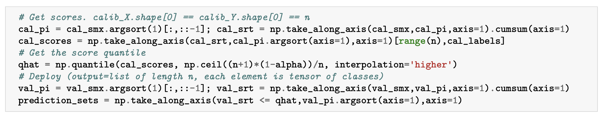
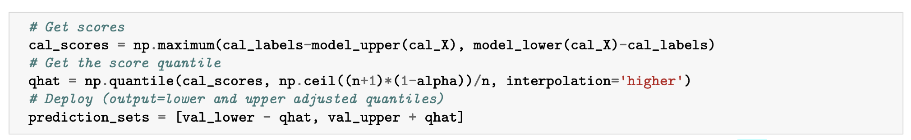
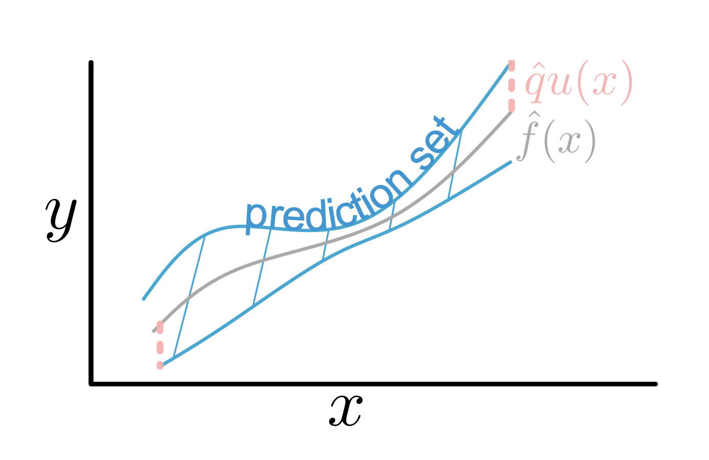
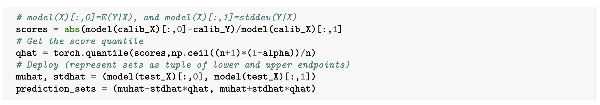
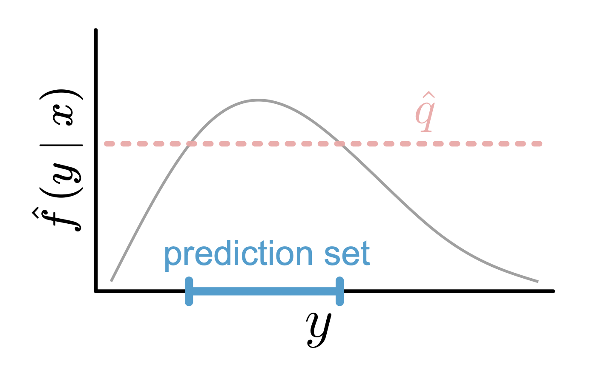
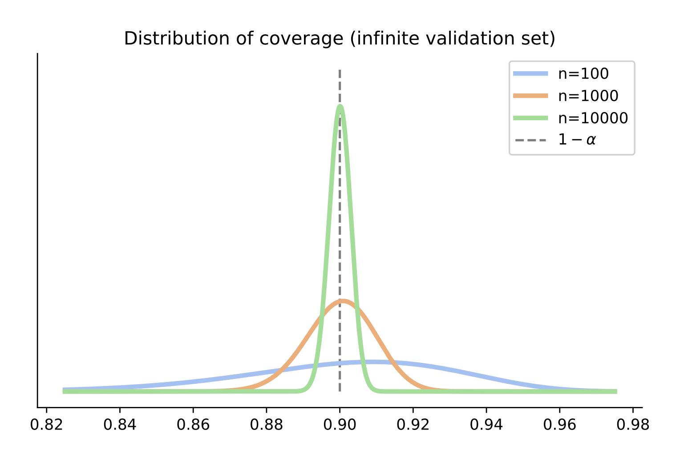
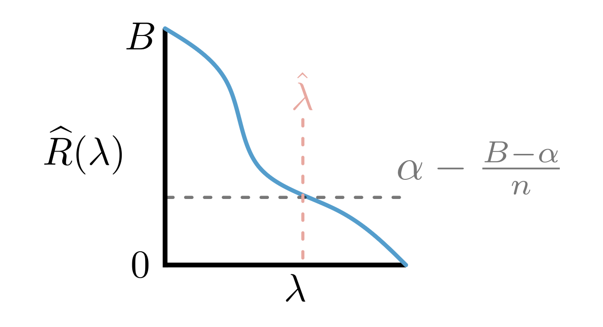
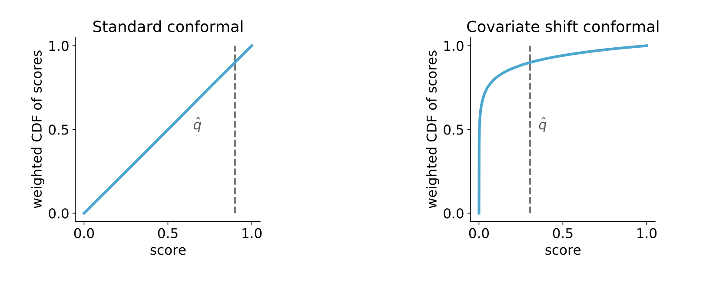
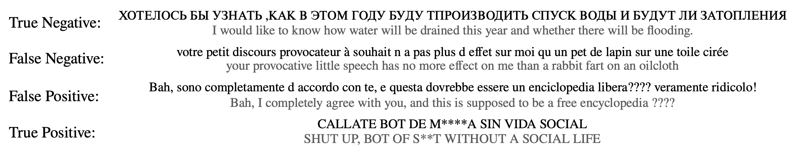

1. From Average Effects To Individual Effects
Introduction
딥러닝 모델과 같은 Black-box 머신러닝 모델들은 의료 진단이나 자율 주행과 같은 High-risk 환경에서 일상적으로 사용되고 있습니다.
하지만 이러한 모델들은 종종 잘못된 예측을 내놓으면서도 높은 확신(Overconfidence)을 보이는 문제가 있습니다.
Conformal Prediction(CP)는 이러한 모델의 예측에 대해 통계적으로 엄밀한 불확실성 구간(Uncertainty Sets/Intervals)을 생성하는 방법론입니다.
CP의 가장 큰 장점은 다음과 같습니다:
- Distribution-free: 데이터의 분포에 대한 가정(가우시안 분포 등)이 필요하지 않습니다.
- Model-agnostic: 뉴럴 네트워크를 포함한 어떤 학습된 모델(Pre-trained model)에도 적용 가능합니다.
- Finite-sample guarantee: 무한한 데이터가 아닌, 유한한 샘플 수에서도 통계적 커버리지(\(1-\alpha\))를 보장합니다.
이 글에서는 논문 “A Gentle Introduction to Conformal Prediction and Distribution-Free Uncertainty Quantification”의 핵심 내용을 바탕으로 CP의 원리와 구현 방법을 정리합니다.
The Intuition: Classification Example
- CP를 이해하기 위해 가장 간단한 이미지 분류(Classification) 문제를 예로 들어보겠습니다.
- \(K\)개의 클래스를 분류하는 모델 \(\hat{f}\)가 있다고 가정합시다.
- 이 모델은 입력 이미지 \(x\)에 대해 각 클래스에 속할 확률(Softmax score)을 출력합니다.

우리의 목표는 단순히 가장 높은 확률을 가진 하나의 라벨을 뱉는 것이 아니라, 정답 라벨 \(Y\)를 \(1-\alpha\)(예: 90%)의 확률로 포함하는 후보 라벨들의 집합(Set) \(\mathcal{C}(X)\)를 만드는 것입니다. \[ 1-\alpha \le \mathbb{P}(Y_{test} \in \mathcal{C}(X_{test})) \le 1-\alpha + \frac{1}{n+1} \]
위 식은 Marginal Coverage라고 불리며, Calibration 데이터와 테스트 데이터의 무작위성을 평균했을 때 예측 집합이 정답을 포함할 확률이 \(1-\alpha\) 이상임을 의미합니다.
The Conformal Prediction Algorithm
- CP는 복잡한 최적화 과정 없이 Calibration Step이라고 불리는 간단한 절차를 통해 수행됩니다.
- 핵심은 모델이 학습 과정에서 보지 못한 Calibration Data (약 500개 정도의 소규모 데이터)를 사용하는 것입니다.
Step 1: Calibration Data 준비
- 학습에 사용되지 않은 \(n\)개의 데이터 쌍 \((X_1, Y_1), \dots, (X_n, Y_n)\)을 준비합니다.
- 이 데이터는 교환 가능(Exchangeable), 일반적으로는 i.i.d. 가정만 만족하면 됩니다.
Step 2: Conformal Score 계산
- 각 Calibration 데이터에 대해 모델이 얼마나 “잘못” 예측했는지를 나타내는 Conformal Score \(s_i\)를 계산합니다.
- 분류 문제에서 가장 일반적인 점수 함수는 다음과 같습니다:
\[ s_i = 1 - \hat{f}(X_i)_{Y_i} \]
- 여기서 \(\hat{f}(X_i)_{Y_i}\)는 정답 클래스 \(Y_i\)에 대한 모델의 Softmax 확률입니다.
- 모델이 정답을 확신할수록 \(\hat{f}(X_i)_{Y_i} \approx 1\)이므로 점수 \(s_i\)는 0에 가까워집니다.
- 모델이 틀렸거나 불확실할수록 점수 \(s_i\)는 커집니다.
Step 3: Quantile 구하기
우리는 새로운 데이터가 들어왔을 때, 모델의 불확실성(Score)이 어느 수준 이하이어야 안심할 수 있는지를 결정해야 합니다.
이를 위해 계산된 점수들 \(s_1, \dots, s_n\)의 분포에서 \(\hat{q}\) (Quantile) 값을 찾습니다.
엄밀한 커버리지를 보장하기 위해 다음과 같은 보정된 분위수(Adjusted Quantile)를 사용합니다:
\[ \hat{q} = \text{Quantile}\left( \frac{\lceil (n+1)(1-\alpha) \rceil}{n} ; \{s_1, \dots, s_n\} \right) \]
- 이 \(\hat{q}\) 값은 “전체 데이터의 \((1-\alpha)\) 비율이 이 점수보다 낮다”는 경계선 역할을 합니다.
Step 4: Prediction Set 구성 (Inference)
- 이제 새로운 테스트 데이터 \(X_{test}\)가 들어오면, 예측 집합 \(\mathcal{C}(X_{test})\)를 다음과 같이 구성합니다:
\[ \mathcal{C}(X_{test}) = \{ y : 1 - \hat{f}(X_{test})_y \le \hat{q} \} = \{ y : \hat{f}(X_{test})_y \ge 1 - \hat{q} \} \]
- 즉, 모델의 예측 확률이 \(1-\hat{q}\) 이상인 모든 클래스를 후보로 포함시킵니다.

General Instructions for Conformal Prediction
- 앞서 설명한 분류 문제는 CP의 특수한 사례일 뿐입니다.
- CP는 Regression, Segmentation 등 어떤 문제에도 적용할 수 있는 일반적인 프레임워크입니다.

일반화된 CP 알고리즘은 다음과 같습니다:
Heuristic Notion of Uncertainty 식별: Pre-trained 모델을 사용하여 불확실성을 나타내는 지표를 정의합니다.
Score Function 정의: \(s(x, y) \in \mathbb{R}\). 점수가 클수록 모델의 예측 \(x\)와 실제값 \(y\) 사이의 불일치(Error)가 큼을 의미해야 합니다.
Quantile \(\hat{q}\) 계산: Calibration 데이터셋에 대해 Score를 계산하고, \(\frac{\lceil(n+1)(1-\alpha)\rceil}{n}\) 분위수를 구합니다.
Prediction Set 생성: \[ \mathcal{C}(X_{test}) = \{ y : s(X_{test}, y) \le \hat{q} \} \] 이 집합은 Score가 \(\hat{q}\)보다 작거나 같은 모든 \(y\)를 포함합니다.
Theoretical Guarantee
- Conformal Prediction이 강력한 이유는 다음의 정리에 의해 수학적으로 증명된 커버리지를 제공하기 때문입니다.
Theorem 1 (Conformal Coverage Guarantee)
Calibration 데이터 \((X_i, Y_i)_{i=1}^n\)와 테스트 데이터 \((X_{test}, Y_{test})\)가 i.i.d.라고 가정하자. 위에서 정의한 절차에 따라 \(\hat{q}\)를 계산하고 집합 \(\mathcal{C}(X_{test})\)를 구성하면, 다음이 성립한다:
\[ P(Y_{test} \in \mathcal{C}(X_{test})) \ge 1 - \alpha \]
- 이 정리는 모델이 아무리 엉터리(Bad)여도 성립합니다.
- 하지만 “유용한(Useful)” 예측 집합을 얻기 위해서는 Score Function의 설계가 중요합니다.
- Score Function이 불확실성을 잘 반영한다면: 쉬운 입력에는 집합 크기가 작고, 어려운 입력에는 커집니다 (Adaptive).
- Score Function이 랜덤하다면: 집합 크기가 불필요하게 커지지만, 여전히 \(1-\alpha\) 커버리지는 만족합니다.
- 따라서 CP의 성패는 “좋은 Score Function을 어떻게 정의하느냐”에 달려 있습니다.
2. From Point Estimates To Interval Estimates
2.1. Problem Setup
Introduction: Why Adaptive?
이전 포스트(Section 1)에서 다룬 기본적인 Conformal Prediction 방법은 단순하고 강력하지만 한 가지 단점이 있습니다.
기존 방식(Naive method)은 단순히 \(1 - \hat{f}(x)_y\)를 점수로 사용하기 때문에, 모든 클래스에 대해 고정된 임계값(Threshold)을 적용하는 경향이 있습니다.
이로 인해 다음과 같은 문제가 발생합니다:
- Hard Inputs (어려운 이미지): 모델이 헷갈려하는 경우에도 예측 집합이 충분히 커지지 않아 정답을 놓칠 수 있습니다 (Under-coverage).
- Easy Inputs (쉬운 이미지): 모델이 확신하는 경우에도 예측 집합이 불필요하게 클 수 있습니다 (Over-coverage).
우리는 입력 이미지의 난이도에 따라 어려우면 집합을 크게, 쉬우면 집합을 작게 만드는 Adaptive Prediction Sets (APS) 기법을 도입하여 이 문제를 해결할 것입니다.
The Intuition: “Water-filling” Approach
- APS의 핵심 아이디어는 직관적입니다.
- 만약 모델의 예측 확률 \(\hat{f}(x)\)가 완벽하다면, 우리는 확률이 높은 클래스부터 순서대로 골라 담으면서 그 확률의 합(Cumulative Sum)이 \(1-\alpha\) (예: 90%)를 넘기는 순간 멈추면 됩니다.
\[ \sum_{j=1}^{k} \hat{f}(x)_{\pi_j(x)} \ge 1 - \alpha \]
여기서 \(\pi(x)\)는 확률이 높은 순서대로 정렬된 클래스의 순열(Permutation)입니다.
이 방식은 “컵에 물(확률)을 \(90\%\)가 찰 때까지 붓는 것”과 유사합니다.
쉬운 문제: 확률 분포가 뾰족(Peaked)하므로, 1~2개만 담아도 금방 \(90\%\)가 찹니다. \(\rightarrow\) Small Set
어려운 문제: 확률 분포가 평평(Flat)하므로, 여러 개를 담아야 \(90\%\)가 찹니다. \(\rightarrow\) Large Set
하지만 실제 모델의 확률 \(\hat{f}(x)\)는 완벽하지 않으므로(Overconfident/Underconfident), 단순히 \(1-\alpha\)에서 끊으면 커버리지를 보장할 수 없습니다.
따라서 Conformal Prediction을 사용하여 이 “멈추는 지점(Threshold)”을 보정해야 합니다.

Mathematical Formulation
- 이제 이를 수학적으로 엄밀하게 정의해보겠습니다.
1. Defining the Score Function
APS를 위한 Score Function \(s(x, y)\)는 “정답 클래스 \(y\)를 포함시키기 위해, 확률 상위 몇 번째 클래스까지 내려가야 하는가?”를 누적 확률로 나타냅니다.
먼저, 입력 \(x\)에 대해 모델이 예측한 확률을 내림차순으로 정렬하는 순열 함수 \(\pi(x)\)를 정의합니다. \[ \hat{f}(x)_{\pi_1(x)} \ge \hat{f}(x)_{\pi_2(x)} \ge \dots \ge \hat{f}(x)_{\pi_K(x)} \]
이때, 정답 클래스 \(y\)가 정렬된 순서상 \(k\)번째에 위치한다고 가정합시다 (\(y = \pi_k(x)\)).
Score \(s(x, y)\)는 \(y\)까지의 누적 확률 질량(Cumulative Probability Mass)으로 정의됩니다:
\[ s(x,y) = \sum_{j=1}^{k} \hat{f}(x)_{\pi_j(x)} \]
- 의미: “모델이 가장 가능성 높다고 생각하는 것부터 정답 \(y\)가 나올 때까지 확률을 다 더한 값”입니다.
- 만약 모델이 정답을 1순위로 예측했다면, \(s(x,y)\)는 작을 것입니다.
- 만약 모델이 정답을 하위권으로 예측했다면, \(s(x,y)\)는 1에 가까워질 것입니다.
2. Calibration (Finding \(\hat{q}\))
- 이제 Calibration 데이터셋 \((X_1, Y_1), \dots, (X_n, Y_n)\)에 대해 위 점수들을 계산합니다.
- 그리고 다음 식을 만족하는 분위수(Quantile) \(\hat{q}\)를 찾습니다.
\[ \hat{q} = \text{Quantile}\left( \frac{\lceil (n+1)(1-\alpha) \rceil}{n} ; \{s_1, \dots, s_n\} \right) \]
- 이 \(\hat{q}\)는 “정답을 포함하기 위해 누적 확률을 어디까지 허용해야 하는가?”에 대한 통계적 임계값입니다.
3. Constructing the Prediction Set
- 새로운 테스트 데이터 \(X_{test}\)에 대해 예측 집합 \(\mathcal{C}(X_{test})\)는 누적 확률이 \(\hat{q}\)를 넘어서는 지점까지의 모든 클래스를 포함하여 구성됩니다.
\[ \mathcal{C}(x) = \{ \pi_1(x), \dots, \pi_k(x) \} \]
- 여기서 \(k\)는 다음을 만족하는 가장 작은 정수입니다: \[ \text{sup} \left\{ k' : \sum_{j=1}^{k'} \hat{f}(x)_{\pi_j(x)} < \hat{q} \right\} + 1 \]
- 즉, 누적 합이 \(\hat{q}\)를 초과하는 순간까지 포함합니다.
Implementation Steps
- Python 코드로 구현할 때의 핵심 로직은 다음과 같습니다.

argsort를 통해 정렬하고 cumsum을 통해 누적 확률을 계산하는 과정이 포함되어 있다.- Softmax & Sort: 모델 출력값(Softmax)을 구하고
argsort를 이용해 내림차순 정렬합니다. - Cumulative Sum: 정렬된 확률값들의 누적 합(
cumsum)을 계산합니다. - Calculate Scores (Calibration): 정답 라벨 위치에서의 누적 합을 가져와 \(s_i\)를 구하고, Quantile \(\hat{q}\)를 계산합니다.
- Prediction (Test): 테스트 데이터의 누적 합이 \(\hat{q}\)보다 작거나 같은 클래스들을 선택합니다. (엄밀하게는 \(\hat{q}\)를 넘는 첫 번째 클래스까지 포함해야 함)
Summary
- Adaptive Prediction Sets (APS)는 불확실성을 더 지능적으로 다루는 방법입니다.
- 단순히 모델의 Softmax 값 하나만 보는 것이 아니라, 전체 확률 분포의 형상(Shape)을 고려합니다.
- 그 결과, 쉬운 샘플에는 작은 집합을, 어려운 샘플에는 큰 집합을 할당하여 사용자가 모델의 신뢰도를 직관적으로 파악할 수 있게 해줍니다.
- 이 모든 과정에서도 \(1-\alpha\)라는 통계적 커버리지는 엄격하게 보장됩니다.
2.2. Traditional Inferential Targets
Introduction
이전 포스트에서는 분류(Classification) 문제에 대한 Conformal Prediction을 다루었습니다.
이번에는 연속적인 값(Continuous Output)을 예측하는 회귀(Regression) 문제로 넘어가 보겠습니다.
회귀 문제에서 우리의 목표는 입력 \(x\)에 대해 단순히 하나의 예측값 \(\hat{y}\)를 내놓는 것이 아니라, 정답 \(y\)가 포함될 확률이 \(1-\alpha\) (예: 90%)인 예측 구간(Prediction Interval)을 생성하는 것입니다.
\[ \mathcal{C}(x) = [\text{Lower Bound}, \text{Upper Bound}] \]
- 이를 위해 가장 효과적인 베이스 모델 중 하나인 Quantile Regression을 사용하고, CP를 통해 이를 보정하는 Conformalized Quantile Regression (CQR) 기법을 알아보겠습니다.
Base Model: Quantile Regression
Concept
일반적인 회귀 모델은 평균(Mean)을 예측(MSE Loss 사용)하지만, Quantile Regression은 조건부 분포의 특정 분위수(Quantile)를 예측합니다.
90%의 커버리지를 목표로 한다면, 우리는 양쪽 꼬리에서 5%씩을 제외한 구간을 알고 싶을 것입니다. 즉, 다음 두 가지 분위수를 학습합니다:
- Lower Quantile: \(\alpha/2 = 0.05\) (5% 지점)
- Upper Quantile: \(1 - \alpha/2 = 0.95\) (95% 지점)
모델이 완벽하다면, 정답 \(y\)는 90%의 확률로 이 구간 \([\hat{t}_{\alpha/2}(x), \hat{t}_{1-\alpha/2}(x)]\) 사이에 존재해야 합니다.
Quantile Loss (Pinball Loss)
- 이러한 분위수를 학습하기 위해 Quantile Loss (Pinball Loss)를 사용합니다.
\[ L_{\gamma}(\hat{t}_{\gamma}, y) = (y - \hat{t}_{\gamma})\gamma \mathbb{1}\{y > \hat{t}_{\gamma}\} + (\hat{t}_{\gamma} - y)(1-\gamma)\mathbb{1}\{y \le \hat{t}_{\gamma}\} \]
- \(\gamma\): 타겟 분위수 (예: 0.05 또는 0.95)
- 이 손실 함수를 사용하여 뉴럴 네트워크 등 어떤 모델이든 특정 분위수를 예측하도록 학습시킬 수 있습니다.
The Problem: Why Conformalize?
Quantile Regression으로 구한 구간 \([\hat{t}_{0.05}(x), \hat{t}_{0.95}(x)]\)는 꽤 훌륭한 불확실성 추정치입니다.
하지만 문제는 “Finite Sample”에서 90% 커버리지를 보장하지 못한다는 점입니다.
모델이 과적합(Overfitting)되거나 학습이 덜 되면, 실제 정답이 이 구간을 벗어나는 비율이 10%보다 훨씬 클 수도, 작을 수도 있습니다.
따라서 우리는 Conformal Prediction을 사용하여 이 구간을 보정(Calibrate)해야 합니다.
Conformalized Quantile Regression Algorithm
- CQR의 핵심 아이디어는 학습된 분위수 구간을 \(\hat{q}\)만큼 늘리거나 줄여서 엄밀한 커버리지를 맞추는 것입니다.
Step 1: Define Score Function
- Calibration 데이터 \((X_i, Y_i)\)에 대해, 정답 \(Y_i\)가 학습된 구간 \([\hat{t}_{\alpha/2}(X_i), \hat{t}_{1-\alpha/2}(X_i)]\) 밖으로 얼마나 나갔는지를 측정하는 Score를 정의합니다.
\[ s(x, y) = \max \{ \hat{t}_{\alpha/2}(x) - y, \quad y - \hat{t}_{1-\alpha/2}(x) \} \]
- 이 식의 의미를 직관적으로 살펴봅시다:
- Case 1: \(y\)가 구간 안에 있을 때:
- \(\hat{t}_{\text{lower}} < y < \hat{t}_{\text{upper}}\) 이므로, 두 항 모두 음수가 됩니다.
- \(s(x, y) < 0\) (즉, 안전함)
- Case 2: \(y\)가 구간 밖(위쪽)에 있을 때:
- \(y > \hat{t}_{\text{upper}}\) 이므로 \(y - \hat{t}_{\text{upper}}\) 가 양수가 됩니다.
- \(s(x, y) > 0\) (즉, 위험함/에러)
- Case 1: \(y\)가 구간 안에 있을 때:
- 즉, 점수 \(s\)가 클수록 정답이 예측 구간을 크게 벗어났음을 의미합니다.
Step 2: Calibration (Get \(\hat{q}\))
- 계산된 점수들 \(s_1, \dots, s_n\)의 분포에서 \(1-\alpha\) 분위수 \(\hat{q}\)를 찾습니다.
\[ \hat{q} = \text{Quantile}\left( \frac{\lceil (n+1)(1-\alpha) \rceil}{n} ; \{s_1, \dots, s_n\} \right) \]
- 만약 모델이 불확실성을 과소평가했다면(구간이 너무 좁으면), 많은 \(y\)가 구간 밖에 있을 것이고 \(s\)값들이 커져서 양수의 \(\hat{q}\)가 나옵니다.
- 만약 모델이 불확실성을 과대평가했다면(구간이 너무 넓으면), \(s\)값들이 대부분 음수일 것이고 음수의 \(\hat{q}\)가 나옵니다.
Step 3: Construct Prediction Interval
- 최종적으로 새로운 입력 \(X_{test}\)에 대한 예측 구간을 생성할 때, 원래 구간을 \(\hat{q}\)만큼 조정합니다.
\[ \mathcal{C}(X_{test}) = [\hat{t}_{\alpha/2}(X_{test}) - \hat{q}, \quad \hat{t}_{1-\alpha/2}(X_{test}) + \hat{q}] \]
- \(\hat{q} > 0\): 원래 구간이 너무 좁았으므로, 양쪽으로 \(\hat{q}\)만큼 넓힙니다.
- \(\hat{q} < 0\): 원래 구간이 너무 넓었으므로, 양쪽으로 \(|\hat{q}|\)만큼 좁힙니다.

Implementation
Python으로 CQR을 구현하는 것은 매우 간단합니다.

- Get Scores: Calibration 데이터에 대해
max(lower - y, y - upper)를 계산합니다.
- Get Scores: Calibration 데이터에 대해
- Get Quantile: 위 점수들의 \((1-\alpha)\) 분위수 \(\hat{q}\)를 계산합니다.
- Deploy: 새로운 데이터의 Lower/Upper 예측값에 각각 \(-\hat{q}, +\hat{q}\)를 더해줍니다.
Conclusion
Conformalized Quantile Regression (CQR)은 회귀 문제에서 가장 널리 사용되는 최신 기법 중 하나입니다.
Adaptivity: 입력값 \(x\)에 따라 구간의 길이(불확실성 크기)가 달라지는 Quantile Regression의 장점을 그대로 가집니다. (어려운 입력은 구간이 넓고, 쉬운 입력은 구간이 좁음)
Validity: Conformal Prediction을 통해 통계적 커버리지를 엄밀하게 보장합니다.
이 방법은 단순한 MSE 기반 회귀보다 훨씬 풍부한 정보를 제공하며, 의료나 금융과 같이 리스크 관리가 중요한 분야에서 필수적인 도구입니다.
2.3. Coverage of Interval Estimates
Introduction
이전 포스트에서 다룬 Conformalized Quantile Regression (CQR)은 매우 강력하지만, 두 개의 Quantile을 학습시켜야 한다는 조건이 있습니다.
하지만 실무에서는 종종 평균(\(\mu\))과 분산(\(\sigma^2\))만을 예측하는 더 단순한 모델을 사용하거나, 혹은 모델 앙상블의 분산 등을 불확실성 지표로 삼기도 합니다.
이번 포스트에서는 이러한 단일 스칼라 불확실성 지표(Scalar Uncertainty Estimate)를 활용하여 통계적으로 유효한 예측 구간을 생성하는 방법을 알아봅니다.
Heuristic Uncertainty: The Estimated Standard Deviation
가장 흔한 시나리오는 데이터가 정규분포(Gaussian)를 따른다고 가정하고 모델을 학습시키는 것입니다.
\[ Y | X = x \sim \mathcal{N}(\mu(x), \sigma(x)) \]
딥러닝 프레임워크(PyTorch 등)에서는
GaussianNLLLoss와 같은 손실 함수를 제공하여, 모델이 평균 예측값 \(\hat{f}(x)\)와 불확실성 예측값 \(\hat{\sigma}(x)\)를 동시에 학습하도록 돕습니다.하지만 실제 데이터는 정규분포를 따르지 않는 경우가 대부분입니다.
따라서 모델이 예측한 \(\hat{\sigma}(x)\)를 그대로 사용하여 \(\hat{f}(x) \pm 1.96\hat{\sigma}(x)\)와 같은 구간을 만들면, 실제로는 95% 커버리지를 보장할 수 없습니다.
우리는 Conformal Prediction을 사용하여 이 부정확한(Heuristic) \(\hat{\sigma}(x)\)를 보정(Calibrate)할 것입니다.
Generalizing Uncertainty Scalars
이 방법은 비단 표준편차뿐만 아니라, “값이 클수록 불확실하다”는 의미를 가진 어떤 함수 \(u(x)\)에도 적용 가능합니다.
논문에서는 \(u(x)\)로 사용할 수 있는 다양한 예시를 제시합니다:
- Residual Prediction: \(|y - \hat{f}(x)|\)를 예측하는 별도의 모델 학습.
- Ensemble Variance: 여러 모델 예측값들의 분산 측정.
- Dropout Variance: 추론 시 Dropout을 켜고 여러 번 예측했을 때의 분산.
- Input Perturbation: 입력에 작은 노이즈를 주었을 때 출력의 변화량.
우리는 이 \(u(x)\)를 “불확실성의 크기(Magnitude)”로 간주하고, 이를 스케일링하는 방식(Multiplicative Correction)을 사용합니다.
The Algorithm
- 알고리즘의 핵심은 “실제 에러가 불확실성 지표 \(u(x)\) 대비 몇 배나 큰가?”를 측정하는 것입니다.
Step 1: Define Score Function
- Calibration 데이터 \((X_i, Y_i)\)에 대해 다음과 같은 Score를 정의합니다.
\[ s(x, y) = \frac{|y - \hat{f}(x)|}{u(x)} \]
- 분자 \(|y - \hat{f}(x)|\): 실제 모델의 예측 오차(절대값)입니다.
- 분모 \(u(x)\): 모델이 스스로 추정한 불확실성입니다.
- 의미: “모델이 예상한 불확실성 대비 실제 오차의 비율”입니다.
- 만약 모델이 불확실하다고 판단(\(u(x)\) 큼)했는데 오차도 크다면, \(s\)는 적절한 값을 가집니다.
- 만약 모델이 확실하다고 판단(\(u(x)\) 작음)했는데 오차가 크다면, \(s\)는 매우 커집니다 (Penalty).
Step 2: Calibration (Get \(\hat{q}\))
- 계산된 점수들 \(s_1, \dots, s_n\)에 대해 \(1-\alpha\) 분위수(Quantile) \(\hat{q}\)를 구합니다.
\[ \hat{q} = \text{Quantile}\left( \frac{\lceil (n+1)(1-\alpha) \rceil}{n} ; \{s_1, \dots, s_n\} \right) \]
- 여기서 구해진 \(\hat{q}\)는 “불확실성 지표 \(u(x)\)에 곱해야 할 보정 계수(Multiplier)” 역할을 합니다.
Step 3: Construct Prediction Interval
- 새로운 입력 \(X_{test}\)에 대한 예측 구간은 중심 예측값 \(\hat{f}(x)\)에서 불확실성 지표 \(u(x)\)의 \(\hat{q}\)배만큼 벌려준 구간이 됩니다.
\[ \mathcal{C}(x) = [\hat{f}(x) - \hat{q}u(x), \quad \hat{f}(x) + \hat{q}u(x)] \]
유도 과정 (Derivation of Validity)
- 이 구간이 왜 \(1-\alpha\) 커버리지를 보장하는지 살펴보겠습니다.
- Calibration 단계에서 \(\hat{q}\)를 구했으므로, 새로운 데이터에 대해 다음 확률이 성립합니다. \[ \mathbb{P}[s(X_{test}, Y_{test}) \le \hat{q}] \ge 1 - \alpha \]
- Score \(s\)의 정의를 대입합니다. \[ \mathbb{P}\left[ \frac{|Y_{test} - \hat{f}(X_{test})|}{u(X_{test})} \le \hat{q} \right] \ge 1 - \alpha \]
- 양변에 \(u(X_{test})\)를 곱합니다 (불확실성은 항상 양수이므로 부등호 유지). \[ \mathbb{P}\left[ |Y_{test} - \hat{f}(X_{test})| \le \hat{q}u(X_{test}) \right] \ge 1 - \alpha \]
- 절대값을 풉니다. \[ \mathbb{P}\left[ -\hat{q}u(X_{test}) \le Y_{test} - \hat{f}(X_{test}) \le \hat{q}u(X_{test}) \right] \ge 1 - \alpha \]
- \(Y_{test}\)에 대해 정리하면 최종 구간이 도출됩니다. \[ \mathbb{P}\left[ \hat{f}(X_{test}) - \hat{q}u(X_{test}) \le Y_{test} \le \hat{f}(X_{test}) + \hat{q}u(X_{test}) \right] \ge 1 - \alpha \]

Implementation
- 이 방법은 구현이 매우 간단하며, PyTorch 등의 라이브러리와 쉽게 결합됩니다.

- Get Scores: 에러의 절대값을 예측된 표준편차(또는 불확실성 지표)로 나눕니다.
- Get Quantile: 점수들의 분위수 \(\hat{q}\)를 계산합니다.
- Deploy: 예측값 \(\pm (\text{불확실성} \times \hat{q})\)를 통해 구간을 생성합니다.
Discussion
- 이 방법은 Symmetric(대칭적)인 구간을 생성한다는 특징이 있습니다.
- 장점: 구현이 쉽고 직관적입니다. 이미 학습된 모델(Gaussian Output 등)을 그대로 재활용하기 좋습니다.
- 단점: CQR과 달리 구간이 항상 예측값을 중심으로 대칭입니다. 실제 데이터 분포가 비대칭(Skewed)이라면 효율적이지 않을 수 있습니다. 또한, \(u(x)\)가 실제 분위수와 비례하지 않는다면 CQR보다 성능(구간의 평균 길이 등)이 떨어질 수 있습니다.
- 따라서 가능하다면 Quantile Regression (CQR)을 사용하는 것이 더 좋지만, 상황이 여의치 않거나 빠른 배포가 필요할 때 이 방법은 훌륭한 대안이 됩니다.
2.4. Conformalizing Bayes
Introduction
Bayesian Neural Network와 같은 베이지안 모델들은 불확실성 정량화(Uncertainty Quantification) 분야에서 매우 매력적인 도구입니다.
이들은 사전 지식(Prior)을 반영할 수 있고, 예측의 결과물로 단일 값이 아닌 분포(Posterior Predictive Density)를 제공하기 때문입니다.
하지만 베이지안 모델에는 치명적인 약점이 있습니다.
“모델의 가정(Prior, Likelihood function 등)이 완벽하게 맞아야만” 예측된 불확실성이 정확하다는 점입니다.
현실의 복잡한 데이터에서 이러한 가정이 완벽히 들어맞기는 어렵습니다.
Conformalizing Bayes는 베이지안 모델의 정보량을 그대로 활용하되, Conformal Prediction을 통해 “가정이 틀렸더라도” 통계적 커버리지를 보장하는 강력한 방법론입니다.
The Bayesian Ideal vs. Reality
Ideal Scenario
- 만약 우리가 만든 베이지안 모델 \(\hat{f}(y|x)\) (입력 \(x\)가 주어졌을 때 \(y\)의 사후 확률 밀도)가 완벽하다면, 최적의 예측 집합 \(S(x)\)는 단순히 밀도 함수(Density)가 높은 영역을 잘라내어 만들 수 있습니다.
\[ S(x) = \{ y : \hat{f}(y|x) > t \} \]
- 여기서 임계값 \(t\)는 해당 영역의 적분값이 \(1-\alpha\)가 되도록 설정합니다. \[\int_{y \in S(x)} \hat{f}(y|x) dy = 1-\alpha\]
- 이를 Highest Posterior Density (HPD) Region이라고도 합니다.
Reality
하지만 우리는 모델 \(\hat{f}\)가 완벽하다고 보장할 수 없습니다.
따라서 위 방식으로 구한 집합은 실제로는 90%를 커버하지 못할 수도(Under-coverage), 너무 넓을 수도(Over-coverage) 있습니다.
우리는 베이지안 모델의 \(\hat{f}(y|x)\)를 “진짜 확률”이 아니라 “유용한 불확실성 점수(Heuristic Score)”로 간주하고, CP를 적용하여 올바른 임계값(Threshold)을 찾을 것입니다.
The Algorithm
- Conformalizing Bayes의 절차는 우리가 익숙한 CP의 흐름을 그대로 따릅니다.
Step 1: Define Score Function
- 우리는 모델이 예측한 사후 확률 밀도(Posterior Predictive Density)가 높을수록 에러가 작다(확실하다)고 봅니다.
- Conformal Score는 “불확실한 정도”를 나타내야 하므로, 밀도 함수의 음수(Negative)를 취합니다. \[
s(x, y) = - \hat{f}(y|x)
\]
- \(\hat{f}(y|x)\)가 높음 (모델이 정답을 확신함) \(\rightarrow\) Score \(s\)는 매우 작은 음수.
- \(\hat{f}(y|x)\)가 낮음 (모델이 정답을 예측 못함) \(\rightarrow\) Score \(s\)는 큰 값(0에 가까운 값 혹은 양수).
Step 2: Calibration (Finding \(\hat{q}\))
- Calibration 데이터 \((X_1, Y_1), \dots, (X_n, Y_n)\)에 대해 점수들을 계산하고, \(1-\alpha\) 분위수 \(\hat{q}\)를 찾습니다.
\[ \hat{q} = \text{Quantile}\left( \frac{\lceil (n+1)(1-\alpha) \rceil}{n} ; \{s_1, \dots, s_n\} \right) \]
- 여기서 구한 \(\hat{q}\)는 “밀도 함수를 어디서 잘라야(Thresholding) 하는가?”에 대한 보정된 기준선이 됩니다.
Step 3: Construct Prediction Set
- 새로운 입력 \(X_{test}\)에 대해, Score가 \(\hat{q}\) 이하인(즉, 밀도가 \(-\hat{q}\) 이상인) 모든 \(y\)를 포함합니다.
\[ \mathcal{C}(x) = \{ y : s(x, y) \le \hat{q} \} = \{ y : -\hat{f}(y|x) \le \hat{q} \} \]
- 이를 정리하면 최종 예측 집합은 다음과 같습니다:
\[ \mathcal{C}(x) = \{ y : \hat{f}(y|x) \ge -\hat{q} \} \]
- 즉, 보정된 임계값 \(-\hat{q}\)보다 확률 밀도가 높은 모든 \(y\)의 집합(Superlevel Set)을 구성합니다.

Mathematical Derivation & Validity
이 집합이 왜 유효한지(Valid) 수학적으로 살펴보겠습니다.
- Calibration Guarantee:
- Calibration 단계에서 \(\hat{q}\)를 구했으므로, 새로운 i.i.d. 샘플에 대해 다음이 성립합니다. \[ \mathbb{P}[s(X_{test}, Y_{test}) \le \hat{q}] \ge 1 - \alpha \]
- Substitution:
- Score의 정의 \(s(x,y) = -\hat{f}(y|x)\)를 대입합니다. \[ \mathbb{P}[-\hat{f}(Y_{test} | X_{test}) \le \hat{q}] \ge 1 - \alpha \]
- Inequality Rearrangement:
- 부등식의 양변에 -1을 곱하여 부등호 방향을 바꿉니다. \[ \mathbb{P}[\hat{f}(Y_{test} | X_{test}) \ge -\hat{q}] \ge 1 - \alpha \]
4. Conclusion: 따라서, 예측 집합 \(\mathcal{C}(X_{test}) = \{ y : \hat{f}(y|X_{test}) \ge -\hat{q} \}\)는 정답 \(Y_{test}\)를 \(1-\alpha\) 확률로 포함합니다.
Why is this useful? (Bayes Optimality)
이 방법은 단순히 유효할(Valid) 뿐만 아니라, 특정 조건 하에서 효율적(Efficient)입니다.
논문에 따르면, 만약 원래의 베이지안 모델이 (비록 틀렸을지라도) 어느 정도 합리적이라면, 이 방법으로 생성된 예측 집합은 \(1-\alpha\) 커버리지를 만족하는 모든 예측 집합 중에서 평균 크기(Average Size)가 가장 작습니다 (Bayes Optimal).
이는 Neyman-Pearson Lemma와 유사한 논리로, “가장 확률 밀도가 높은 곳부터 담는 것”이 주어진 확률 질량을 채우면서 집합의 크기(Volume)를 최소화하는 전략이기 때문입니다.
Summary
- Conformalizing Bayes는 베이지안 모델의 확률 밀도 함수를 Score로 사용하여 CP를 적용하는 기법입니다.
- 결과적으로 “Superlevel Set of Density” 형태의 예측 집합을 얻게 됩니다.
- 이 방법은 베이지안 모델의 가정이 틀려도 Coverage를 보장하며, 동시에 베이지안 모델의 정보량을 활용하여 집합의 크기를 최적화할 수 있습니다.
3. From Observables To Counterfactuals
3.1. Evaluating Adaptivity
Introduction
지금까지 우리는 Conformal Prediction(CP)을 통해 \(1-\alpha\)의 커버리지를 보장하는 예측 집합을 만드는 법을 배웠습니다.
하지만 “평균적으로 90% 정답을 포함한다(Marginal Coverage)”는 사실만으로는 충분하지 않습니다.
예를 들어, 어떤 의사가 쉬운 환자에게는 100% 정확한 진단을 내리지만, 어려운 희귀병 환자에게는 0%의 정확도를 보인다면 어떨까요?
전체 평균으로는 90% 정확도일지 몰라도, 이는 좋은 시스템이라 할 수 없습니다.
좋은 CP 알고리즘은 쉬운 입력에는 작은 집합(Small Sets)을, 어려운 입력에는 큰 집합(Large Sets)을 출력해야 합니다. 이를 Adaptivity(적응성)라고 합니다.
이번 포스트에서는 내 모델이 얼마나 “적응적(Adaptive)”인지 평가하는 구체적인 지표들을 알아봅니다.
Metric 1: Set Size Distribution
- 가장 먼저 확인해야 할 지표는 예측 집합 크기(Set Size)의 분포입니다.
- 단순히 평균 크기만 보는 것이 아니라, 히스토그램을 그려봐야 합니다.

- Average Set Size:
- 작을수록 좋습니다. (단, \(1-\alpha\) 커버리지를 만족하는 전제하에)
- 평균이 너무 크다면? \(\rightarrow\) 모델 성능이 나쁘거나, Score Function이 효율적이지 않음을 의미합니다.
- Spread of Set Sizes:
- 분포가 넓을수록(Dynamic Range가 클수록) 좋습니다.
- 분포가 넓다는 것은 모델이 “확실한 것(크기 1)”과 “불확실한 것(크기 5 이상)”을 잘 구분하고 있다는 뜻입니다.
Metric 2: Conditional Coverage
- 우리가 궁극적으로 원하는 것은 모든 개별 입력 \(X\)에 대해 커버리지를 보장하는 Conditional Coverage입니다.
\[ \mathbb{P}[Y_{test} \in \mathcal{C}(X_{test}) | X_{test}] \ge 1 - \alpha \]
- 하지만 현실적으로 모든 \(X\)값 하나하나에 대해 이를 검증하는 것은 불가능합니다(Impossible in general case).
- 대신 우리는 데이터를 의미 있는 그룹(Group)으로 나누어, 각 그룹별로 커버리지가 잘 지켜지는지 확인해야 합니다.

- 위 그림의 중앙(Marginal) 케이스를 봅시다.
- Group 1 (Easy): 100% 커버리지 (과잉)
- Group 2 (Hard): 80% 커버리지 (부족)
- 전체 평균: 90% 커버리지 (만족)
- 이런 경우 “Marginal Coverage는 만족하지만, Conditional Coverage는 실패했다”고 합니다.
- 이를 잡아내기 위해 다음 두 가지 지표를 사용합니다.
2.1 Feature-stratified Coverage (FSC)
데이터의 특성(Feature)에 따라 그룹을 나누어 커버리지를 측정하는 방법입니다.
예를 들어 인종(Race), 나이대(Age), 혹은 이미지의 밝기 등으로 데이터를 그룹화(\(g=1, \dots, G\))합니다.
각 그룹 \(\mathcal{I}_g\)에 속한 데이터들의 커버리지를 계산하고, 가장 성능이 안 좋은 그룹(Minimum Coverage)을 찾습니다.
\[ \text{FSC metric} = \min_{g \in \{1, \dots, G\}} \frac{1}{|\mathcal{I}_g|} \sum_{i \in \mathcal{I}_g} \mathbb{I}\{ Y_i \in \mathcal{C}(X_i) \} \]
- 만약 완벽한 Conditional Coverage라면, 이 값은 \(1-\alpha\)에 근접해야 합니다.
- 이 값이 \(1-\alpha\)보다 현저히 낮다면, 특정 그룹(예: 야간 주행 이미지)에서 모델이 실패하고 있음을 의미합니다.
2.2 Size-stratified Coverage (SSC)
- 하지만 어떤 Feature가 중요한지 모를 때는 어떻게 할까요?
- 이때 사용할 수 있는 아주 일반적이고 강력한 방법이 “예측 집합의 크기”로 그룹을 나누는 것입니다.
- 그룹 1: 집합 크기가 1인 데이터들 (\(\mathcal{C}(x)| = 1\))
- 그룹 2: 집합 크기가 2인 데이터들
- …
- 모델이 “이건 정말 어려워서 후보를 10개나 뽑았어”라고 말한 경우(집합 크기 10), 실제로도 그 안에 정답이 90% 확률로 들어 있어야 합니다.
\[ \text{SSC metric} = \min_{g \in \{ \text{set sizes} \}} \frac{1}{|\mathcal{I}_g|} \sum_{i \in \mathcal{I}_g} \mathbb{I}\{ Y_i \in \mathcal{C}(X_i) \} \]
- 이 지표는 사용자가 사전에 그룹을 정의할 필요가 없으므로(Feature-agnostic), 어떤 상황에서도 바로 적용해볼 수 있는 훌륭한 진단 도구입니다.
Summary
- Conformal Prediction을 평가할 때는 단순히 전체 커버리지만 보지 말고, 다음을 꼭 확인해야합니다:
- Histogram of Set Sizes: 쉬운 건 작게, 어려운 건 크게 잘 구분하고 있는가?
- Stratified Coverage (FSC / SSC): 특정 그룹(인종, 나이, 혹은 모델이 불확실해하는 그룹)에서만 커버리지가 깨지고 있지는 않은가?
- 이러한 Adaptivity 체크는 실험실 환경을 넘어 실제 서비스(Production)에 CP를 적용할 때 “Non-negotiable(타협할 수 없는)” 필수 검증 단계입니다.
3.2. The Effect of the Size of the Calibration Set
Introduction
- Conformal Prediction(CP)을 실제 서비스에 배포할 때, 엔지니어가 가장 먼저 마주하는 실무적인 질문은 이것입니다.
“Calibration Set(\(n\))의 크기는 얼마나 커야 할까요? 100개면 충분한가요, 아니면 1,000개가 필요한가요?”
이론적으로 CP의 커버리지 보장(\(1-\alpha\))은 \(n\)의 크기와 상관없이 성립합니다(Finite-sample guarantee).
하지만 직관적으로 생각했을 때, 데이터가 많을수록 더 안정적일 것이라 예상할 수 있습니다.
이번 포스트에서는 Calibration Set의 크기 \(n\)이 예측 구간의 안정성(Stability)에 미치는 영향을 수학적으로 분석하고, 실무적인 가이드라인(\(n \approx 1000\))을 제시합니다.
Validity vs. Stability
The Theoretical Guarantee (Validity)
- 놀랍게도, CP의 커버리지 보장 정리(Theorem 1)는 모든 \(n\)에 대해 성립합니다.
- Calibration 데이터가 단 10개뿐이라도, 새로운 데이터에 대한 평균 커버리지는 \(1-\alpha\)를 만족합니다.
The Catch (Stability)
하지만 여기에는 중요한 디테일이 숨어 있습니다.
우리가 보장하는 것은 “Calibration Set을 무한히 새로 뽑았을 때의 평균”입니다.
하지만 현실에서 우리는 단 하나의 고정된 Calibration Set을 사용합니다.
만약 우리가 운이 나빠서 이상한(Bias된) 데이터가 섞인 Calibration Set을 뽑았다면 어떨까요?
이 고정된 데이터셋으로 학습된 CP 모델을 무한한 테스트 데이터에 적용했을 때의 실제 커버리지는 \(1-\alpha\)와 정확히 일치하지 않을 수 있습니다.
즉, Calibration Set 자체의 무작위성(Randomness) 때문에 실제 커버리지는 확률 변수(Random Quantity)가 됩니다.
Mathematical Derivation: Beta Distribution
- Vladimir Vovk는 고정된 Calibration Set이 주어졌을 때, 무한한 검증 데이터에 대한 커버리지 확률 분포가 베타 분포(Beta Distribution)를 따른다는 것을 증명했습니다.
\[ \mathbb{P}(Y_{test} \in \mathcal{C}(X_{test}) \mid \{(X_i, Y_i)\}_{i=1}^n) \sim \text{Beta}(n+1-l, l) \]
- 여기서 파라미터 \(l\)은 다음과 같이 정의됩니다: \[
l = \lfloor (n+1)\alpha \rfloor
\]
- 의미: 이 식은 \(n\)이 커질수록 커버리지 확률 분포가 \(1-\alpha\)를 중심으로 얼마나 뾰족하게(Sharp) 모이는지를 설명합니다.
- 평균: 베타 분포의 성질에 의해 이 분포의 기댓값은 정확히 \(1-\alpha\)가 됩니다 (Validity).
- 분산: \(n\)이 작을수록 분산이 커져서, 실제 커버리지가 목표치 \(1-\alpha\)에서 크게 벗어날 확률이 높아집니다.
Visualizing the Effect of \(n\)
- 이 현상을 시각적으로 확인해보겠습니다.
- 아래 그래프는 Calibration Set의 크기 \(n\)에 따른 커버리지 확률의 밀도 함수를 보여줍니다.

- \(n=100\) (파란색): 그래프가 넓게 퍼져 있습니다. 운이 나쁘면 실제 커버리지가 85%나 95%가 될 수도 있습니다.
- \(n=1,000\) (주황색): 그래프가 훨씬 좁아졌습니다. 대부분의 경우 커버리지가 88% ~ 92% 사이로 유지됩니다.
- \(n=10,000\) (초록색): 매우 뾰족합니다. 거의 정확하게 90%를 맞춥니다.
Practical Guideline: The “n=1000” Rule
- 그렇다면 실무에서는 몇 개를 써야 할까요?
- 논문에서는 \(n=1000\) 정도면 대부분의 목적에 충분하다고 제안합니다.
- 안정성 확보: 위 그래프에서 보듯이, \(n=1000\)일 때 커버리지는 목표치(\(1-\alpha\))에서 \(\pm 2\%\) 내외의 오차 범위를 가집니다. 이는 대부분의 머신러닝 애플리케이션에서 허용 가능한 수준입니다.
- 비용 효율성: 데이터를 10,000개까지 늘려도 얻을 수 있는 이득(오차 감소)은 크지 않습니다. (수렴 속도가 \(\mathcal{O}(n^{-1/2})\)로 느려지기 때문)
Required Sample Size Calculation
- 만약 더 엄격한 기준(예: 99% 확률로 오차 1% 이내)이 필요하다면, 다음 표를 참고하여 필요한 \(n\)을 역산할 수 있습니다.
| 허용 오차 (\(\epsilon\)) | 필요한 \(n\) (신뢰도 90%) |
|---|---|
| 0.1 (10%) | 22 |
| 0.05 (5%) | 102 |
| 0.01 (1%) | 2,491 |
| 0.005 (0.5%) | 9,812 |
- 일반적인 기준인 90% 신뢰도(\(\delta=0.1\))에서 목표 커버리지와의 오차를 1%(\(\epsilon=0.01\)) 이내로 줄이려면 약 2,500개의 데이터가 필요합니다.
- 하지만 5% 오차(\(\epsilon=0.05\))를 허용한다면 102개로도 충분합니다.
Summary
- Conformal Prediction은 \(n\)이 작아도 평균적으로는 커버리지를 보장합니다.
- 하지만 개별 Calibration Set에 대한 신뢰도(Stability)를 높이기 위해서는 충분한 \(n\)이 필요합니다.
- Rule of Thumb: 약 1,000개의 Calibration 데이터를 사용하면, 실제 커버리지가 목표치에서 크게 벗어나지 않음(약 \(\pm 2\%\))을 확신할 수 있습니다.
3.3. Checking for Correct Coverage
Introduction
Conformal Prediction(CP)을 구현했다면, 가장 먼저 해야 할 일은 “이게 정말 작동하는가?”를 확인하는 것입니다.
즉, 우리가 설정한 목표 커버리지(예: 90%)가 실제 테스트 데이터에서도 지켜지는지 검증해야 합니다.
하지만 단순히 한 번의 테스트 셋 결과만 보고 “90.1%니까 성공!”이라고 단정 짓기는 어렵습니다.
데이터의 무작위성 때문에 우연히 잘 나왔을 수도, 우연히 못 나왔을 수도 있기 때문입니다.
따라서 우리는 여러 번의 실험(Trials)을 통해 커버리지 분포를 확인해야 합니다.
Methodology: Repeated Experiments
- 가장 확실한 검증 방법은 \(R\)번의 독립적인 실험을 수행하는 것입니다.
- 각 실험 \(j=1, \dots, R\)마다 새로운 Calibration Set과 Validation Set을 준비하고, 다음 과정을 반복합니다:
- Calibration 수행 \(\rightarrow\) \(\hat{q}_j\) 계산
- Validation Set에 대해 예측 집합 구성 \(\mathcal{C}_j\)
- 경험적 커버리지(Empirical Coverage) \(C_j\) 계산:
\[ C_j = \frac{1}{n_{val}} \sum_{i=1}^{n_{val}} \mathbb{I} \{ Y_{i,j}^{(val)} \in \mathcal{C}_j(X_{i,j}^{(val)}) \} \]
- 이렇게 얻은 \(R\)개의 커버리지 값들 \(C_1, \dots, C_R\)의 평균 \(\overline{C}\)는 이론적으로 \(1-\alpha\)에 매우 근접해야 합니다.
\[ \overline{C} = \frac{1}{R} \sum_{j=1}^{R} C_j \approx 1 - \alpha \]
- 또한, \(C_j\)들의 히스토그램을 그렸을 때 \(1-\alpha\)를 중심으로 종 모양(Bell-curve) 분포를 보여야 합니다.
The Practical Challenge: Limited Data
현실적인 문제는 “매번 새로운 데이터를 어디서 구하는가?”입니다.
우리가 가진 데이터는 유한(총 \(n_{total} = n + n_{val}\))하므로, \(R\)번이나 새로운 데이터를 수집할 수는 없습니다.
따라서 우리는 Resampling (Random Split) 방식을 사용합니다.
전체 데이터를 무작위로 섞어서 Calibration/Validation 셋으로 나누는 과정을 \(R\)번 반복하는 것입니다.
Efficiency Trick: Score Caching
하지만 \(R\)번(예: 100번)이나 모델을 다시 학습시키거나 추론(Inference)을 돌리는 것은 계산 비용이 매우 큽니다.
여기서 중요한 팁은 Conformal Score를 미리 계산해두는 것(Caching)입니다.
CP 알고리즘은 Score값(\(s_i\))들의 순위에만 의존합니다.
데이터가 어느 셋(Calibration vs Validation)에 속하느냐에 따라 역할만 달라질 뿐, 각 데이터 포인트의 Score 값 자체는 변하지 않습니다.
따라서 다음과 같이 효율적으로 검증할 수 있습니다:
- Pre-computation: 전체 데이터에 대해 Score를 미리 한 번만 계산합니다.
- Shuffle & Split: 계산된 Score 배열만 무작위로 섞어서 나눕니다.
- Evaluate: 나누어진 Score들로 Quantile을 구하고 커버리지를 계산합니다.
이 방식을 사용하면 딥러닝 모델을 매번 돌릴 필요가 없어 검증 속도가 수백 배 빨라집니다.
Implementation
- Python 코드로 이를 구현하면 다음과 같습니다.

get_scores), 반복문 안에서는 단순히 배열을 섞고(shuffle) 자르는 연산만 수행한다.Code Explanation
- Load/Compute Scores:
get_scores(X, Y)를 통해 모든 데이터의 Score를 계산하고 저장합니다.
- Load/Compute Scores:
- Loop \(R\) times:
np.random.shuffle(scores): Score들을 섞습니다.calib, val = scores[:n], scores[n:]: \(n\)개는 Calibration용, 나머지는 검증용으로 나눕니다.qhat: Calibration Score들로 Quantile을 계산합니다.mean(): Validation Score들이qhat보다 작은 비율(Coverage)을 계산합니다.
- Check:
coverages.mean()이 \(1-\alpha\)와 비슷한지 확인하고, 히스토그램을 그립니다.
- Check:
Interpretation of Results
검증 결과 커버리지가 정확히 90.00%가 나오지 않더라도 당황할 필요는 없습니다.
\(n\) (Calibration 크기), \(n_{val}\) (Validation 크기), \(R\) (반복 횟수)이 모두 유한하기 때문에 약간의 변동(Benign Fluctuations)은 자연스러운 현상입니다.
정상: 평균이 0.89 ~ 0.91 사이이며 히스토그램이 0.9 근처에 모여 있음.
비정상: 평균이 0.80처럼 현저히 낮거나, 히스토그램이 한쪽으로 크게 치우침 \(\rightarrow\) 구현 오류(버그) 혹은 데이터 분포의 문제(i.i.d. 위반 등)를 의심해야 합니다.
이 진단 과정을 통과했다면, 여러분의 Conformal Predictor는 통계적으로 신뢰할 수 있는 상태입니다.
4. From Counterfactuals to Treatment Effects
4.1. Group-Balanced Conformal Prediction
Introduction: The Fairness Problem
지금까지 우리는 전체 데이터셋에 대해 평균적으로 \(1-\alpha\)의 커버리지를 보장하는 방법(Marginal Coverage)을 배웠습니다.
하지만 현실 세계, 특히 의료나 금융 같은 민감한 분야에서는 “평균적인 성공”만으로는 충분하지 않습니다.
예를 들어, 어떤 질병 진단 AI가 백인 환자에게는 99%의 정확도를 보이지만, 유색 인종 환자에게는 80%의 정확도밖에 보이지 않는다고 가정해봅시다.
이 경우 백인 환자가 다수라면 전체 평균 정확도는 90%를 넘길 수 있겠지만, 이는 공정하지 못한(Unfair) 시스템입니다.
Group-Balanced Conformal Prediction은 이러한 문제를 해결하기 위해, 데이터 내의 특정 그룹(인종, 성별, 연령대 등) 각각에 대해 독립적으로 커버리지를 보장하는 기법입니다.
Problem Formulation
우리의 입력 데이터 \(X\)의 첫 번째 특성(Feature) \(X_{i,1}\)이 그룹을 나타내는 범주형 변수라고 가정해봅시다.
이 그룹은 \(\{1, \dots, G\}\) 중 하나의 값을 가집니다.
기존의 CP는 다음을 보장했습니다: \[ \mathbb{P}(Y_{test} \in \mathcal{C}(X_{test})) \ge 1-\alpha \]
하지만 우리가 원하는 것은 모든 그룹 \(g\)에 대해 다음이 성립하는 것입니다:
\[ \mathbb{P}(Y_{test} \in \mathcal{C}(X_{test}) \mid X_{test,1} = g) \ge 1-\alpha, \quad \forall g \in \{1, \dots, G\} \]
- 즉, 어떤 그룹에 속한 데이터가 들어오더라도 똑같이 \(1-\alpha\) 이상의 확률로 정답을 포함해야 합니다.
The Algorithm
- 이 문제를 해결하는 방법은 직관적입니다. “그룹별로 따로따로 Conformal Prediction을 수행”하는 것입니다.
Step 1: Stratify Calibration Data
- Calibration 데이터셋을 그룹별로 나눕니다.
- 그룹 \(g\)에 속하는 데이터들만 모아서 부분집합을 만듭니다.
\[ S^{(g)} = \{ (X_j, Y_j) : X_{j,1} = g \} \]
Step 2: Calibrate per Group
- 각 그룹 \(g\)에 대해 독립적으로 Quantile \(\hat{q}^{(g)}\)를 계산합니다.
- 그룹 \(g\) 데이터에 대한 Conformal Score들을 계산합니다: \[s^{(g)}_1, \dots, s^{(g)}_{n^{(g)}}\]
- 해당 그룹의 데이터 개수 \(n^{(g)}\)를 기준으로 보정된 분위수를 구합니다: \[ \hat{q}^{(g)} = \text{Quantile}\left( \frac{\lceil (n^{(g)}+1)(1-\alpha) \rceil}{n^{(g)}} ; \{s^{(g)}_1, \dots, s^{(g)}_{n^{(g)}}\} \right) \]
- 결과적으로 우리는 그룹의 개수만큼 서로 다른 임계값(Threshold) \(\hat{q}^{(1)}, \dots, \hat{q}^{(G)}\)를 얻게 됩니다.
- 모델이 잘 맞추는 쉬운 그룹은 \(\hat{q}\)가 작을 것이고 (작은 예측 집합),
- 모델이 어려워하는 그룹은 \(\hat{q}\)가 클 것입니다 (큰 예측 집합).
Step 3: Inference
- 새로운 테스트 데이터 \(X_{test}\)가 들어오면, 먼저 이 데이터가 어느 그룹에 속하는지(\(X_{test,1}\)) 확인합니다.
- 그리고 해당 그룹에 맞는 임계값 \(\hat{q}^{(X_{test,1})}\)을 사용하여 예측 집합을 구성합니다.
\[ \mathcal{C}(x) = \{ y : s(x, y) \le \hat{q}^{(x_1)} \} \]

Theoretical Guarantee
- 이 방법은 Vovk에 의해 처음 제안되었으며, 다음의 명제에 의해 수학적으로 정당화됩니다.
Proposition 1 (Error control guarantee for group-balanced conformal prediction)
데이터가 i.i.d. 가정하에 추출되었다면, 위 알고리즘을 통해 생성된 예측 집합 \(\mathcal{C}\)는 모든 그룹 \(g\)에 대해 다음을 만족한다.
\[ \mathbb{P}(Y_{test} \in \mathcal{C}(X_{test}) \mid X_{test,1} = g) \ge 1-\alpha \]
- 이로써 우리는 인종, 성별 등 민감한 속성에 관계없이 모든 사용자에게 동등한 수준의 안전장치(Equal Coverage)를 제공할 수 있게 됩니다.
Practical Note
- Explicit Groups: 인종, 성별처럼 데이터에 명시적으로 존재하는 카테고리를 사용할 수 있습니다.
- Constructed Groups (Binning): 나이(Age)와 같은 연속형 변수라도, ‘20대’, ‘30대’ 등으로 구간화(Binning)하여 그룹을 만든 뒤 이 방법을 적용할 수 있습니다. 이를 통해 연속적인 특성에 대한 Conditional Coverage를 근사할 수 있습니다.
4.2. Class-Conditional Conformal Prediction
Introduction: The Problem with Imbalanced Classes
머신러닝 분류 문제, 특히 의료 진단과 같은 분야에서는 클래스 불균형(Class Imbalance)이 흔하게 발생합니다.
예를 들어, 암 진단 모델을 개발한다고 가정해봅시다.
- 정상(Normal): 데이터의 95%
- 암(Cancer): 데이터의 5%
우리가 일반적인 Conformal Prediction을 사용하여 95% 커버리지를 달성했다고 칩시다.
가장 쉬운 달성 방법은 무엇일까요?
“그냥 모든 환자를 ’정상’이라고 예측하고, 암 환자는 다 틀리는 것”입니다.
이렇게 해도 (정상 95% + 암 0%) / 100% \(\approx\) 95% 커버리지는 달성됩니다.
하지만 이는 재앙입니다.
우리는 암 환자에 대해서도 똑같이 95%의 정확도로 정답을 포함시키기를 원합니다.
Class-Conditional Conformal Prediction은 바로 이 문제, 즉 모든 정답 클래스(Ground Truth Class)에 대해 균등한 커버리지를 보장하기 위한 방법입니다.
Problem Formulation
- 우리의 목표는 단순한 전체 평균(\(1-\alpha\))이 아니라, 각 클래스 \(y \in \{1, \dots, K\}\) 별로 조건부 커버리지를 만족하는 것입니다.
\[ \mathbb{P}(Y_{test} \in \mathcal{C}(X_{test}) \mid Y_{test} = y) \ge 1-\alpha, \quad \forall y \in \{1, \dots, K\} \]
- 이것이 보장된다면, “암 환자” 그룹 내에서도 정답이 예측 집합에 포함될 확률이 95% 이상이 되고, “정상인” 그룹 내에서도 마찬가지가 됩니다.
The Algorithm
- 알고리즘은 Group-Balanced CP와 유사하게 “따로따로(Separately)” 전략을 취하지만, 추론(Inference) 단계에서 중요한 차이가 있습니다.
Step 1: Stratify Calibration Data by Class
- Calibration 데이터셋을 실제 정답 클래스(Ground Truth Class)별로 나눕니다.
\[ S^{(k)} = \{ (X_j, Y_j) : Y_j = k \} \]
Step 2: Calibrate per Class
- 각 클래스 \(k\)에 대해 독립적으로 Quantile \(\hat{q}^{(k)}\)를 계산합니다.
- 클래스 \(k\)에 속하는 데이터들의 Score \(s^{(k)}_1, \dots, s^{(k)}_{n^{(k)}}\)를 모읍니다.
- 해당 클래스의 데이터 수 \(n^{(k)}\)를 기준으로 보정된 분위수를 구합니다: \[ \hat{q}^{(k)} = \text{Quantile}\left( \frac{\lceil (n^{(k)}+1)(1-\alpha) \rceil}{n^{(k)}} ; \{s^{(k)}_1, \dots, s^{(k)}_{n^{(k)}}\} \right) \]
- 결과적으로 우리는 클래스 개수만큼의 임계값 \(\hat{q}^{(1)}, \dots, \hat{q}^{(K)}\)를 얻습니다.
- 샘플이 적거나 모델이 어려워하는 클래스(예: 암)는 임계값이 높게(보수적으로) 설정될 것입니다.
Step 3: Inference (Iterative Check)
이 부분이 4.1절(Group-Balanced)과 가장 다릅니다.
테스트 시점에는 입력 \(X_{test}\)의 진짜 클래스(True Class)가 무엇인지 모릅니다.
따라서 “해당 그룹의 \(\hat{q}\)를 가져다 쓰는” 방식은 불가능합니다.
대신, 우리는 “만약 정답이 클래스 \(y\)라면?”이라는 가정을 모든 후보 클래스에 대해 수행합니다.
예측 집합 \(\mathcal{C}(x)\)는 다음 조건을 만족하는 모든 클래스 \(y\)를 포함합니다: \[ \mathcal{C}(x) = \{ y : s(x, y) \le \hat{q}^{(y)} \} \]
- 후보 클래스 \(y\)가 ‘암’이라면? \(\rightarrow\) \(s(x, \text{암})\)을 계산하고, 이를 ’암’ 클래스의 임계값 \(\hat{q}^{(\text{암})}\)과 비교합니다.
- 후보 클래스 \(y\)가 ‘정상’이라면? \(\rightarrow\) \(s(x, \text{정상})\)을 계산하고, 이를 ’정상’ 클래스의 임계값 \(\hat{q}^{(\text{정상})}\)과 비교합니다.
각 클래스마다 자신만의 기준(Threshold)을 통과해야 집합에 들어갈 수 있는 것입니다.

Comparison: Group-Balanced vs. Class-Conditional
- 이 두 가지 확장의 차이를 명확히 구분하는 것이 중요합니다.
| 특징 | Group-Balanced (4.1) | Class-Conditional (4.2) |
|---|---|---|
| 기준 (Condition) | 입력 특성 (Input Feature \(X_{:,1}\)) | 출력 라벨 (Output Label \(Y\)) |
| 정보 가용성 | 테스트 시점에 \(X\)를 통해 그룹을 알 수 있음 | 테스트 시점에 \(Y\)를 알 수 없음 |
| 적용 방식 | 그룹을 확인하고 \(\rightarrow\) 해당 그룹의 \(\hat{q}\) 적용 | 모든 \(y\)에 대해 순회하며 \(\rightarrow\) 각자의 \(\hat{q}^{(y)}\) 적용 |
| 주요 사용처 | 공정성 (인종, 성별 간 평등) | 불균형 데이터 (희귀 클래스 탐지) |
Theoretical Guarantee
- Vovk의 증명에 따르면, 이 방법 또한 수학적으로 엄밀한 커버리지를 보장합니다.
Proposition 2 (Error control guarantee for class-balanced conformal prediction)
데이터가 i.i.d.라면, 위 알고리즘으로 생성된 집합 \(\mathcal{C}\)는 모든 클래스 \(y\)에 대해 다음을 만족한다.
\[ \mathbb{P}(Y_{test} \in \mathcal{C}(X_{test}) \mid Y_{test} = y) \ge 1-\alpha \]
Conclusion
- Class-Conditional CP는 불균형한 데이터셋에서 소수 클래스(Minority Class)의 성능을 희생하지 않기 위한 필수적인 기법입니다.
- 비록 소수 클래스의 데이터가 적어서 \(\hat{q}\)가 커지고(불확실성이 커지고), 결과적으로 예측 집합의 크기가 커질 수는 있습니다.
- 하지만 이는 “틀리는 것”보다는 훨씬 낫습니다. 우리는 적어도 그 안에 정답이 있다는 확신(Safety)을 가질 수 있기 때문입니다.
4.3. Conformal Risk Control
Introduction: Beyond Coverage
- 지금까지 우리가 다룬 Conformal Prediction의 핵심 보장은 다음과 같은 형태였습니다.
\[ \mathbb{P}(Y_{test} \notin \mathcal{C}(X_{test})) \le \alpha \]
- 즉, “정답을 놓칠 확률(Miscoverage rate)”을 \(\alpha\) 이하로 묶는 것이었습니다.
- 하지만 현실의 많은 머신러닝 문제에서는 단순히 “맞았다/틀렸다”의 이진(Binary) 에러보다 더 복잡한 손실(Loss)을 제어해야 할 때가 많습니다.
- 의료 영상 분할(Tumor Segmentation): 암 영역을 조금이라도 놓치면(False Negative) 치명적입니다. 픽셀 단위의 재현율(Recall)을 보장해야 할 수 있습니다.
- 다중 라벨 분류(Multilabel Classification): 여러 개의 태그 중 90% 이상을 맞추기를 원할 수 있습니다 (F1-score 등).
- Conformal Risk Control (CRC)은 이러한 요구를 반영하여, 임의의 유계 손실 함수(Bounded Loss Function)의 기댓값을 제어하는 기법입니다.
\[ \mathbb{E}[l(\mathcal{C}(X_{test}), Y_{test})] \le \alpha \]
Problem Formulation
- 우리의 목표는 모델의 출력 집합 \(\mathcal{C}(X)\)가 커질수록 손실(Loss)이 줄어드는 상황에서, 기대 손실(Expected Risk)이 사용자 지정 허용치 \(\alpha\) 이하가 되도록 하는 파라미터를 찾는 것입니다.
Key Components
- Nested Sets (\(\mathcal{C}_\lambda\)):
- 우리는 파라미터 \(\lambda\)를 조절하여 예측 집합의 크기(보수적인 정도)를 조절합니다.
- \(\lambda\)가 커질수록 예측 집합 \(\mathcal{C}_\lambda(x)\)는 더 커지고(더 많은 후보를 포함), 따라서 더 안전해집니다(Conservative).
- Monotone Loss Function (\(l\)):
- 손실 함수 \(l(\mathcal{C}, Y)\)는 집합 \(\mathcal{C}\)가 커질수록 감소하거나 같아야 합니다 (Non-increasing).
- 또한, 손실값은 어떤 상한선 \(B\)를 넘지 않아야 합니다 (\(l \in (-\infty, B]\)).
The Algorithm
- CRC의 알고리즘은 기존 CP와 매우 유사하지만, Quantile 대신 경험적 리스크(Empirical Risk)를 사용한다는 점이 다릅니다.
Step 1: Calculate Empirical Risk
- Calibration 데이터셋 \((X_1, Y_1), \dots, (X_n, Y_n)\)에 대해, 특정 파라미터 \(\lambda\)를 썼을 때의 평균 손실(Empirical Risk)을 계산하는 함수 \(\hat{R}(\lambda)\)를 정의합니다.
\[ \hat{R}(\lambda) = \frac{1}{n} \sum_{i=1}^{n} l(\mathcal{C}_{\lambda}(X_i), Y_i) \]
- 이 함수는 \(\lambda\)가 증가함에 따라 손실이 감소하는 우하향 곡선을 그립니다.
Step 2: Find Optimal \(\lambda\)
우리는 기대 손실이 \(\alpha\) 이하가 되기를 원합니다.
하지만 유한한 데이터(\(n\))로 인한 불확실성을 고려해야 하므로, 단순히 \(\hat{R}(\lambda) \le \alpha\)가 되는 지점을 찾으면 안 됩니다.
대신, 다음과 같이 보정된 기준(Conservative Target)을 사용합니다.
\[ \hat{\lambda} = \inf \left\{ \lambda : \hat{R}(\lambda) \le \alpha - \frac{B - \alpha}{n} \right\} \]
- \(B\): 손실 함수의 최댓값 (Upper Bound)
- Correction Term (\(\frac{B-\alpha}{n}\)): 데이터 개수 \(n\)이 적을 때 더 보수적으로 \(\lambda\)를 선택하게 만드는 항입니다. \(n\)이 무한대로 가면 이 항은 0이 되어 \(\alpha\)에 수렴합니다.

Example: Multilabel Classification
다중 라벨 분류 문제를 예로 들어보겠습니다.
하나의 이미지가 ‘사람’, ‘차’, ‘신호등’ 등 여러 클래스(\(Y_i \subseteq \{1, \dots, K\}\))를 가질 수 있습니다.
- Prediction Set:
- 모델이 각 클래스에 대해 예측한 점수 \(f(X)_k\)가 임계값 \(1-\lambda\) 이상인 클래스들을 담습니다. \[ \mathcal{C}_\lambda(x) = \{ k : f(x)_k \ge 1-\lambda \} \]
- \(\lambda\)가 클수록 임계값이 낮아져 더 많은 클래스가 선택됨
- Loss Function:
- “전체 정답 태그 중 놓친 태그의 비율”을 손실로 정의합니다. \[ l(\mathcal{C}, Y) = 1 - \frac{|Y \cap \mathcal{C}|}{|Y|} \]
- 이 값은 0(모두 맞춤)과 1(하나도 못 맞춤) 사이이므로 \(B=1\)입니다.
- Applying CRC:
- 사용자가 \(\alpha=0.1\)로 설정했다면, 위 알고리즘을 통해 구한 \(\hat{\lambda}\)를 사용했을 때 “평균적으로 정답 태그의 90% 이상을 포함”하는 예측 집합을 얻게 됩니다.
Theoretical Guarantee
- 이 알고리즘은 다음 정리에 의해 수학적으로 보장됩니다.
Theorem 2 (Conformal Risk Control)
데이터가 i.i.d.이고 손실 함수가 단조 감소(Monotone)한다면, 위 알고리즘으로 선택된 \(\hat{\lambda}\)에 대해 다음이 성립한다.
\[ \mathbb{E}[l(\mathcal{C}_{\hat{\lambda}}(X_{test}), Y_{test})] \le \alpha \]
- 이 정리는 CP가 단순히 “에러율 제어”를 넘어, FNR, False Discovery Rate 등 비즈니스에 중요한 다양한 KPI를 직접 제어할 수 있는 도구로 확장됨을 의미합니다.
4.4. Outlier Detection
Introduction: Unsupervised Setting
- 이전까지 우리는 입력 \(X\)와 정답 \(Y\)가 있는 지도 학습 환경을 다루었습니다.
- 하지만 \(Y\) 라벨이 없는 경우, 특히 “정상 데이터 분포에서 벗어난 이상치(Outlier)”를 탐지해야 하는 상황은 어떻게 해야 할까요?
- 공장 설비의 이상 진동 감지
- 네트워크 침입 탐지
- 불량품 검출
- 이러한 Outlier Detection (Anomaly Detection) 문제에서도 Conformal Prediction을 활용하면, “정상 데이터를 이상치라고 오판할 확률(False Positive Rate)”을 통계적으로 제어할 수 있습니다.
Problem Formulation
우리는 오염되지 않은 깨끗한 데이터(Clean Dataset) \(X_1, \dots, X_n\)을 가지고 있습니다.
이들은 모두 정상(Inlier) 분포에서 나왔다고 가정합니다.
우리의 목표는 새로운 데이터 \(X_{test}\)가 들어왔을 때, 이것이 정상 분포에서 온 것인지 아니면 이상치인지 판단하는 함수 \(\mathcal{C}\)를 만드는 것입니다.
이때, 실제로는 정상인데 이상치라고 잘못 판단할 확률(Type I Error)을 \(\alpha\) 이하로 억제해야 합니다. \[ \mathbb{P}(\mathcal{C}(X_{test}) = \text{outlier}) \le \alpha \]
- 여기서 확률은 \(X_{test}\)가 정상 데이터 분포에서 왔을 때의 확률입니다.
The Algorithm
- 알고리즘은 기존의 Conformal Prediction과 매우 유사하지만, \(Y\)가 없기 때문에 입력 \(X\)만으로 계산되는 Score를 사용합니다.
Step 1: Define Heuristic Score Function
- 비지도 학습 모델(예: One-class SVM, Isolation Forest, Autoencoder의 Reconstruction Error 등)을 사용하여, 데이터 포인트가 이상치일수록 커지는 점수 함수 \(s(x)\)를 정의합니다. \[ s(x): \mathcal{X} \rightarrow \mathbb{R} \]
- \(s(x)\)가 큼 \(\rightarrow\) 이상치(Outlier)일 가능성 높음
- \(s(x)\)가 작음 \(\rightarrow\) 정상(Inlier)일 가능성 높음
Step 2: Calibration
- 깨끗한 데이터셋 \(X_1, \dots, X_n\)에 대해 점수들을 계산합니다. \[ s_i = s(X_i), \quad i=1, \dots, n \]
- 그리고 이 점수들의 분포에서 \(1-\alpha\) 분위수(Quantile)에 해당하는 임계값 \(\hat{q}\)를 계산합니다.
\[ \hat{q} = \text{Quantile}\left( \{s_1, \dots, s_n\} ; \frac{\lceil (n+1)(1-\alpha) \rceil}{n} \right) \]
Step 3: Detection (Inference)
- 새로운 테스트 데이터 \(X_{test}\)가 들어오면 점수 \(s(X_{test})\)를 계산하고, 임계값 \(\hat{q}\)와 비교하여 판정합니다.
\[ \mathcal{C}(x) = \begin{cases} \text{inlier} & \text{if } s(x) \le \hat{q} \\ \text{outlier} & \text{if } s(x) > \hat{q} \end{cases} \]
Theoretical Guarantee & Interpretation
- 이 간단한 절차는 다음 명제에 의해 False Positive Rate를 \(\alpha\) 이하로 보장합니다.
Proposition 3 (Error control guarantee for outlier detection)
\(X_1, \dots, X_n\)과 \(X_{test}\)가 동일한 분포(i.i.d.)에서 추출되었다면, 위 알고리즘은 다음을 만족한다. \[ \mathbb{P}(\mathcal{C}(X_{test}) = \text{outlier}) \le \alpha \]
Statistical Interpretation
- 이 과정은 통계적 가설 검정(Hypothesis Testing)과도 연결됩니다.
- 귀무가설(\(H_0\)): \(X_{test}\)는 정상 데이터 분포(Calibration Data)와 교환 가능하다(Exchangeable).
- 기각: 만약 \(s(X_{test})\)가 상위 \(\alpha\) 범위에 들어간다면(즉, p-value < \(\alpha\)), 우리는 귀무가설을 기각하고 해당 데이터를 이상치로 판단합니다.
Conclusion
- Conformal Outlier Detection은 복잡한 이상탐지 모델의 출력값을 “신뢰할 수 있는 통계적 판정”으로 변환해줍니다.
- 사용자는 “이 데이터는 점수가 0.8입니다”라는 모호한 말 대신, “이 데이터는 95% 신뢰수준에서 정상 범위를 벗어났습니다”라는 명확한 근거를 가지고 의사결정을 내릴 수 있습니다.
4.5. Conformal Prediction Under Covariate Shift
Introduction: When the i.i.d. Assumption Fails
지금까지 우리가 배운 모든 Conformal Prediction(CP) 방법론은 하나의 강력한 가정에 의존하고 있습니다.
바로 “테스트 데이터가 Calibration 데이터와 동일한 분포(i.i.d.)에서 왔다”는 가정입니다.
하지만 현실은 그렇지 않습니다. 과거의 데이터가 미래를 완벽하게 대변하지 못하는 경우가 많습니다.
- 의료 진단: 학습 데이터는 성인과 유아의 비율이 50:50이었는데, 실제 병원에는 성인이 95% 방문할 수 있습니다.
- 자율 주행: 아침(밝음)에 데이터를 수집하여 학습했는데, 실제 주행은 오후(어두움)에 이루어질 수 있습니다.
이러한 분포의 변화 중 Covariate Shift는 입력 변수 \(X\)의 분포 \(P(X)\)는 바뀌지만, 입력과 출력 사이의 관계 \(P(Y|X)\)는 유지되는 상황을 말합니다.
이번 포스트에서는 Weighted Conformal Prediction을 사용하여 이러한 변화 속에서도 커버리지를 보장하는 방법을 알아봅니다.
Problem Formulation: Covariate Shift
- 우리의 상황을 수식으로 정의해봅시다.
- Calibration Data: \(P\) 분포에서 추출됨.
- Test Data: \(\mathcal{P}_{test}\) 분포에서 추출됨.
\[ X \sim P \quad \rightarrow \quad X_{test} \sim \mathcal{P}_{test} \]
- 단, \(Y|X\) (입력이 주어졌을 때 정답의 분포)는 변하지 않는다고 가정합니다.
- 이를 Covariate Shift라고 합니다.
- 이 상황에서 기존의 일반적인 CP를 사용하면 커버리지가 깨질 수 있습니다.
- 예를 들어, 모델이 어려워하는 데이터(유아)가 테스트 셋에 더 많이 등장한다면, 에러율은 우리가 설정한 \(\alpha\)보다 훨씬 높아질 것입니다.
The Solution: Weighted Conformal Prediction
- 해결책의 핵심은 “테스트 분포 \(\mathcal{P}_{test}\)에서 더 자주 등장할 것 같은 데이터에 더 큰 가중치(Weight)를 주는 것”입니다.
Step 1: Likelihood Ratio Calculation
- 먼저, 두 분포 사이의 비율(Likelihood Ratio)을 계산하는 함수 \(w(x)\)를 정의합니다. \[
w(x) = \frac{d\mathcal{P}_{test}(x)}{dP(x)}
\]
- \(w(x) > 1\): 해당 샘플 \(x\)는 학습 때보다 테스트 때 더 자주 등장합니다 (중요함).
- \(w(x) < 1\): 해당 샘플 \(x\)는 테스트 때 덜 등장합니다 (덜 중요함).
Step 2: Compute Normalized Weights
- 새로운 테스트 포인트 \(x\)가 들어왔을 때, 이 \(x\)와 기존 Calibration 데이터 \(X_i\)들에게 부여할 확률 질량(Probability Mass)을 재계산합니다.
\[ p_i^w(x) = \frac{w(X_i)}{\sum_{j=1}^{n} w(X_j) + w(x)} \]
\[ p_{test}^w(x) = \frac{w(x)}{\sum_{j=1}^{n} w(X_j) + w(x)} \]
- 기존 CP에서는 모든 데이터가 \(\frac{1}{n+1}\)의 동등한 확률을 가졌습니다.
- Weighted CP에서는 \(w(\cdot)\)에 비례하여 확률을 다르게 배정합니다.
- 즉, 테스트 분포와 유사한 데이터일수록 \(p_i\)가 커집니다.
Step 3: Weighted Quantile Calculation
- 이제 가장 중요한 단계인 Quantile 계산입니다.
- 기존에는 단순히 점수를 정렬하고 \((1-\alpha)\) 지점을 찾았지만, 이제는 가중치가 반영된 누적 분포(Weighted CDF)를 사용해야 합니다. \[
\hat{q}(x) = \inf \left\{ s_j : \sum_{i=1}^{j} p_i^w(x) \mathbb{I}\{s_i \le s_j\} \ge 1-\alpha \right\}
\]
- 여기서 \(s_j\)는 오름차순으로 정렬된 Calibration Score라고 가정합니다.
- 즉, 가중치 \(p_i^w(x)\)들을 순서대로 더해가다가, 그 합이 \(1-\alpha\)를 넘기는 순간의 점수를 \(\hat{q}(x)\)로 선택합니다.
Intuition: How Quantile Changes
- 이 과정이 직관적으로 어떤 의미를 가질까요?

Shift towards Hard Examples: 만약 테스트 분포가 모델이 어려워하는(Score가 높은) 데이터들 쪽으로 이동했다면, 높은 점수를 가진 \(X_i\)들의 가중치 \(w(X_i)\)가 커집니다. \(\rightarrow\) CDF 그래프에서 오른쪽 부분의 경사가 가파라집니다. \(\rightarrow\) \(1-\alpha\) 지점에 도달하기 위해 더 많은 점수를 지나야 하거나, 더 높은 점수에서 도달하게 됩니다. \(\rightarrow\) \(\hat{q}\)가 증가합니다 (더 보수적인, 넓은 예측 집합 생성).
Shift towards Easy Examples: 반대로 테스트 분포가 쉬운 데이터들 위주라면, 낮은 점수들의 가중치가 커집니다. \(\rightarrow\) \(\hat{q}\)가 감소합니다 (더 좁고 효율적인 예측 집합 생성).
Theorem & Guarantee
- Tibshirani et al. (2019)에 의해 제안된 이 방법은 다음 정리에 의해 커버리지를 보장합니다.
Theorem 3 (Conformal prediction under covariate shift)
데이터가 위에서 정의한 Covariate Shift 가정하에 생성되었다면, Weighted Quantile \(\hat{q}(X_{test})\)를 사용한 예측 집합 \(\mathcal{C}\)는 다음을 만족한다.
\[ \mathbb{P}(Y_{test} \in \mathcal{C}(X_{test})) \ge 1-\alpha \]
Conclusion
Weighted Conformal Prediction은 데이터 분포가 변하는 현실 세계의 문제에 CP를 적용하기 위한 필수적인 도구입니다.
단순히 \(\frac{1}{n+1}\)이라는 고정 관념을 깨고, “테스트 시점에 더 중요한 데이터에 가중치를 준다”는 아이디어를 통해 분포 변화에 유연하게 대처할 수 있습니다.
이 방법은 \(w(x)\)를 정확히 안다면 완벽하게 작동하며, \(w(x)\)를 추정해야 하는 경우에도 꽤 견고한(Robust) 성능을 보여줍니다.
4.6. Conformal Prediction Under Distribution Shift
Introduction: When Data Changes Over Time
이전 포스트(4.5절)에서는 입력 분포가 변하는 Covariate Shift를 다루었습니다.
하지만 그보다 더 다루기 까다로운 것은 Distribution Drift(분포 표류)입니다.
Distribution Drift는 데이터의 분포가 시간이 지남에 따라 서서히(Slowly varying), 혹은 알 수 없는 방식으로 변하는 현상을 말합니다.
- 주식 시장: 10년 전의 시장 상황과 오늘의 시장 상황은 전혀 다릅니다.
- 센서 데이터: 기계가 노후화되면서 센서의 측정값 분포가 서서히 달라집니다.
이런 시계열(Time-series) 문제에서는 “과거의 모든 데이터가 미래를 예측하는 데 동등하게 중요하다”는 i.i.d. 가정이 성립하지 않습니다.
1년 전 데이터보다 어제의 데이터가 훨씬 중요하기 때문입니다.
이번 포스트에서는 최신 데이터에 더 큰 가중치를 부여하는 Weighted Conformal Prediction을 통해 이 문제를 해결하는 방법을 알아봅니다.
The Method: Weighted Conformal Prediction (Again)
- 기본적인 아이디어는 4.5절의 Covariate Shift와 동일하게 Weighted Quantile을 사용하는 것입니다.
- 하지만 가중치 \(w_i\)를 결정하는 방식이 다릅니다.
- Likelihood Ratio를 계산하는 대신, 시간적 근접성(Recency)을 기준으로 가중치를 설정합니다.
Step 1: Define Weight Schedule
사용자는 도메인 지식에 기반하여 “오래된 데이터를 얼마나 잊을 것인가”를 결정하는 가중치 스케줄을 정의합니다.
가장 널리 쓰이는 두 가지 방법은 다음과 같습니다:
- Rolling Window (Sliding Window):
- 최근 \(K\)개의 데이터만 사용하고, 나머지는 버립니다. \[ w_i^{\text{fixed}} = \mathbb{I}\{i \ge n - K\} \]
- Exponential Decay (Smooth Decay):
- 과거 데이터의 영향력을 지수적으로 감소시킵니다. \[ w_i^{\text{decay}} = \gamma^{n-i+1} \quad (0 < \gamma < 1) \]
- 예: \(\gamma = 0.99\)라면 바로 직전 데이터는 1, 그 전은 0.99, 그 전은 \(0.98 \dots\) 가중치를 가짐.
Step 2: Normalize Weights
- 정의된 가중치 \(w_i\)를 전체 합이 1이 되도록 정규화(Normalize)합니다.
- 이때 테스트 포인트 \(X_{test}\)의 가중치 \(w_{test}\)도 포함하여 계산합니다.
- 보통 \(w_{test}=1\)로 둠.
\[ \tilde{w}_i = \frac{w_i}{\sum_{j=1}^{n} w_j + 1} \]
Step 3: Weighted Quantile
- 정규화된 가중치를 사용하여 보정된 분위수(Quantile) \(\hat{q}\)를 계산합니다.
- Calibration Score \(s_i\)들을 오름차순 정렬했을 때, 누적 가중치 합이 \(1-\alpha\)를 넘는 지점을 찾습니다.
\[ \hat{q} = \inf \left\{ q : \sum_{i=1}^{n} \tilde{w}_i \mathbb{I}\{s_i \le q\} \ge 1-\alpha \right\} \]
Theoretical Analysis
- 이 방식이 왜 작동하는지 수학적으로 살펴보겠습니다.
- Barber et al. (2022)의 연구에 따르면, Weighted CP는 분포 간의 거리(Total Variation Distance)에 비례하는 오차 범위 내에서 커버리지를 보장합니다.
Theorem 4 (Conformal prediction under distribution drift)
\(i\)번째 Calibration 데이터와 테스트 데이터 사이의 TV 거리(Total Variation Distance)를 \(\epsilon_i\)라고 하자. \[ \epsilon_i = d_{TV}((X_i, Y_i), (X_{test}, Y_{test})) \]
이때 위에서 정의한 Weighted CP 절차는 다음을 만족한다: \[ \mathbb{P}(Y_{test} \in \mathcal{C}(X_{test})) \ge 1 - \alpha - 2 \sum_{i=1}^{n} \tilde{w}_i \epsilon_i \]
Interpretation
- 이 부등식의 우변에 있는 페널티 항 (\(2 \sum \tilde{w}_i \epsilon_i\))을 줄이는 것이 핵심입니다.
- \(\epsilon_i\) (Drift):
- 데이터 \(i\)가 현재 시점(\(test\))과 얼마나 다른 분포를 가지는지를 나타냅니다.
- 오래된 데이터일수록 \(\epsilon_i\)가 클(1에 가까울) 것입니다.
- \(\tilde{w}_i\) (Weight):
- 우리가 부여한 가중치입니다.
- \(\epsilon_i\) (Drift):
- 우리의 목표는 \(\epsilon_i\)가 큰(오래되어 분포가 달라진) 데이터에 작은 가중치 \(\tilde{w}_i\)를 부여하여, 곱 \(\tilde{w}_i \epsilon_i\)를 0에 가깝게 만드는 것입니다.
- 즉, “분포가 많이 변한 데이터는 무시하겠다”는 전략을 통해 커버리지 손실을 막을 수 있습니다.
Practical Consideration: Effective Sample Size
- 가중치를 사용하면 분포 변화에는 대응할 수 있지만, 대가가 따릅니다. 바로 유효 샘플 수(Effective Sample Size)가 줄어든다는 점입니다.
\[ n^{\text{eff}} = \frac{(\sum w_i)^2}{\sum w_i^2} \]
- Uniform Weights (\(w_i=1\)): \(n^{\text{eff}} = n\). 모든 데이터를 다 쓰므로 샘플 수가 많아 분산이 작습니다 (안정적).
- Concentrated Weights: 최근 데이터에만 큰 가중치를 주면 \(n^{\text{eff}}\)가 급격히 작아집니다.
- \(n^{\text{eff}}\)가 작아지면 \(\rightarrow\) 커버리지의 분산(Variance)이 커집니다. (즉, 예측 집합의 크기가 들쑥날쑥해짐)
- 따라서 Trade-off가 존재합니다:
- 가중치를 너무 급격하게 줄이면(빠른 적응) \(\rightarrow\) 분포 변화에는 강하지만, 예측이 불안정해짐.
- 가중치를 너무 천천히 줄이면(느린 적응) \(\rightarrow\) 예측은 안정적이지만, 이미 변해버린 과거 분포의 영향을 받음.
Conclusion
Conformal Prediction Under Distribution Drift는 시계열 데이터와 같이 Non-stationary 환경에서 신뢰할 수 있는 예측 구간을 만드는 방법입니다.
핵심은 Weighted Quantile을 사용하는 것입니다.
가중치 스케줄(Sliding Window, Decay)을 통해 과거 데이터를 적절히 “망각(Forget)”해야 합니다.
이론적으로, 분포 변화가 큰 데이터에 가중치를 적게 줌으로써 커버리지 하락을 방어합니다.
하지만 너무 과도한 가중치 조절은 유효 샘플 수를 줄여 불안정성을 초래할 수 있으므로 주의가 필요합니다.
5. Worked Examples
Introduction
지금까지 우리는 Conformal Prediction(CP)의 다양한 이론적 확장(Extension)들을 다루었습니다.
이제 이 도구들이 실제 머신러닝 문제에서 어떻게 작동하는지 확인할 차례입니다.
이번 포스트에서는 논문의 Section 5에서 소개된 5가지의 구체적인 적용 사례를 살펴봅니다.
각 사례는 단순한 분류/회귀를 넘어, Risk Control, Distribution Shift, Outlier Detection 등 현실적인 난제들을 어떻게 해결하는지 보여줍니다.
1. Multilabel Classification with FNR Control
Problem Setup
- 이미지 안에 있는 모든 객체를 맞추는 다중 라벨 분류(Multilabel Classification) 문제입니다.
- 단순히 정답을 포함하는 것을 넘어, “정답 객체 중 90% 이상을 찾아내라(Recall \(\ge\) 90%)”와 같은 요구사항이 있을 때 사용합니다.
- 이를 위해 False Negative Rate (FNR)를 제어합니다.
- Dataset: Microsoft COCO (Common Objects in Context)
- Goal: 실제 객체들(\(Y\)) 중 모델이 예측한 집합(\(\mathcal{C}\))에 포함되지 않은 비율(FNR)을 \(\alpha\) 이하로 유지.
Methodology: Conformal Risk Control
여기서는 Section 4.3에서 다룬 Conformal Risk Control(CRC)을 사용합니다.
- Prediction Set Construction:
- 모델의 예측 확률 \(\hat{f}(x)\)가 임계값 \(\lambda\) 이상인 클래스들을 선택합니다. \[ \mathcal{C}_\lambda(x) = \{ k : \hat{f}(x)_k \ge \lambda \} \]
- \(\lambda\)가 작을수록 더 많은 클래스를 포함하므로 보수적이 됨.
- Loss Function (\(l_{FNR}\)):
- 예측 집합이 정답을 얼마나 놓쳤는지를 정의합니다. \[l_{FNR}(\mathcal{C}_\lambda(x), y) = 1 - \frac{|\mathcal{C}_\lambda(x) \cap y|}{|y|}\]
- 만약 정답 \(y=\{\text{사람, 차}\}\)인데 예측 \(\mathcal{C}=\{\text{사람}\}\)이라면, 교집합은 1개, 정답은 2개이므로 손실은 \(1 - 1/2 = 0.5\)입니다.
- Threshold Optimization:
- Calibration Set에서 경험적 리스크가 \(\alpha\) (보정항 포함) 이하가 되는 \(\hat{\lambda}\)를 찾습니다. \[ \hat{\lambda} = \inf \left\{ \lambda : \frac{1}{n}\sum_{i=1}^n l_{FNR}(\mathcal{C}_\lambda(X_i), Y_i) \le \alpha - \frac{1-\alpha}{n} \right\} \]

2. Tumor Segmentation
Problem Setup
- 의료 영상에서 종양(Tumor) 부위를 픽셀 단위로 분할(Segmentation)하는 문제입니다.
- 여기서도 핵심은 “종양 픽셀을 놓치지 않는 것”입니다. 즉, 픽셀 단위의 FNR 제어가 필요합니다.
- Dataset: Gut Polyps dataset
- Goal: 전체 종양 픽셀 중 예측 마스크가 커버하지 못한 비율을 제어.
Methodology
Multilabel Classification과 원리는 동일하지만, 대상이 클래스에서 픽셀로 바뀝니다.
- Output: \(M \times N\) 크기의 확률 맵 \(\hat{f}(x)\).
- Prediction Mask: 각 픽셀 \((i,j)\)에 대해 확률이 \(\lambda\) 이상이면 종양으로 예측. \[\mathcal{C}_\lambda(x) = \{ (i,j) : \hat{f}(x)_{(i,j)} \ge \lambda \}\]
- Loss Function: \[l(\mathcal{C}, Y) = \frac{\text{\# of missed tumor pixels}} {\text{total \# of tumor pixels}}\]
이 방법을 적용하면 의사는 “이 AI가 표시한 영역 안에 실제 종양의 90%가 포함되어 있다”는 확신을 가지고 진단에 임할 수 있습니다.

3. Weather Prediction (Time-Series)
Problem Setup
- 시간의 흐름에 따라 기온(Temperature)을 예측하는 시계열 회귀 문제입니다.
- 시간이 지남에 따라 계절이 바뀌고 기후가 변하므로, 데이터는 i.i.d.가 아니며 분포가 표류(Distribution Drift)합니다.
- Dataset: Yandex Weather Prediction (Shifts Project)
- Challenge: 과거 데이터와 현재 데이터의 상관관계가 변함.
Methodology: Weighted Conformal Prediction
- Section 4.6의 분포 표류(Distribution Drift) 대응법을 사용합니다.
- Score Function:
- 예측값 \(\hat{f}(X_t)\)와 불확실성 추정값 \(\hat{u}(X_t)\)를 이용한 정규화된 잔차(Normalized Residual)를 사용합니다. \[ s_t = \frac{|Y_t - \hat{f}(X_t)|}{\hat{u}(X_t)} \]
- Weighted Quantile:
- 최근 \(K\)개의 데이터만 사용하는 Sliding Window 방식을 적용합니다.
- 가중치 \(w_{t'} = \mathbb{I}\{t' \ge t - K\}\)를 사용하여, 오래된 데이터는 과감히 버리고 최근 데이터 분포에만 맞춥니다. \[ \hat{q}_t = \text{Quantile}_{\text{weighted}}(s_{t-K}, \dots, s_{t-1}) \]
- 결과적으로 급격한 기온 변화나 계절 변화가 발생했을 때, 일반 CP보다 훨씬 빠르게 적응하여 적절한 커버리지를 회복합니다.

4. Toxic Comment Identification (Outlier Detection)
Problem Setup
- 온라인 댓글이 유해한지(Toxic) 아닌지를 판별하는 문제입니다.
- 정상적인 대화(Non-toxic) 데이터만 잔뜩 있는 상태에서, 새로운 댓글이 정상 범주를 벗어난(Outlier/Toxic) 것인지 탐지합니다.
- Dataset: Jigsaw Multilingual Toxic Comment Classification
- Goal: 정상 댓글을 유해하다고 잘못 판별할 확률(False Positive Rate)을 \(\alpha\) 이하로 제어. (Type-1 Error Control)
Methodology: Conformal Outlier Detection
- Section 4.4의 방법을 적용합니다.
- Heuristic Model: BERT 기반의 유해성 점수 예측 모델 \(f(x) \in [0, 1]\).
- Calibration: 정상 댓글(Non-toxic) \(n\)개에 대해 점수 \(s_i = f(X_i)\)를 계산하고 Quantile \(\hat{q}\)를 구합니다.
- Detection: \[ \mathcal{C}(x) = \begin{cases} \text{Normal} & \text{if } f(x) \le \hat{q} \\ \text{Toxic (Outlier)} & \text{if } f(x) > \hat{q} \end{cases} \]
- 이 방식은 “이 댓글은 유해합니다”라고 경보를 울릴 때, 그 경보가 오작동일 확률을 수학적으로 보장해줍니다.

5. Selective Classification (Abstention)
Problem Setup
- 모델이 확신할 수 없을 때는 “모르겠습니다(I don’t know)”라고 대답을 거부(Abstain)하는 시스템입니다.
- 목표는 대답을 거부하지 않고 예측을 내놓았을 때의 정확도가 \(\ge 1-\alpha\)가 되도록 하는 것입니다.
- Dataset: ImageNet
- Goal: Selective Accuracy \(\ge 90\%\).
Methodology: Learn then Test
- 이 문제는 정확도(Accuracy)가 임계값 \(\lambda\)에 따라 단조 증가(Monotone)하지 않을 수 있기 때문에, 표준 CRC 대신 Learn then Test (Appendix A 내용) 프레임워크를 사용합니다.
- Risk Definition: \[ R(\lambda) = \mathbb{P}(\text{Error} \mid \text{Confidence} \ge \lambda) \]
- 조건부 확률이므로 직접 제어하기 까다롭습니다.
- Empirical Estimate & Upper Bound:
- Calibration Set에서 특정 신뢰도 \(\lambda\) 이상인 샘플들의 에러율 \(\hat{R}(\lambda)\)를 계산합니다.
- 이 에러율은 이항 분포(Binomial Distribution)를 따르므로, 클로퍼-피어슨(Clopper-Pearson) 구간 등을 이용해 에러율의 보수적 상한선(Upper Bound) \(\hat{R}^+(\lambda)\)을 구합니다.
- Scan & Select: \(\hat{R}^+(\lambda) \le \alpha\)를 만족하는 가장 작은 \(\lambda\)를 선택합니다.
- 결과적으로 모델은 자신이 없으면 대답을 회피하고, 대답을 했을 때는 매우 높은 정확도를 보장하게 됩니다.

Conclusion
- 이상의 5가지 예제는 Conformal Prediction이 단순히 이론적인 개념에 머무르지 않고, 실제 현업의 복잡한 문제들을 해결하는 강력한 도구임을 보여줍니다.
- Segmentation/Multilabel: 단순 에러율이 아닌 FNR 등 복잡한 Metric 제어.
- Time-series: 데이터 분포 변화(Drift)에 대한 적응.
- Outlier Detection: 비지도 학습 환경에서의 통계적 보장.
- Selective Classification: 고위험 환경에서의 안전한 AI.
- 이 모든 과정에서 가장 중요한 것은 “적절한 Score Function의 정의”와 “올바른 Calibration 기법의 선택”입니다.
6. Full Conformal Prediction
Introduction: The Efficiency Trade-off
- 지금까지 우리가 다룬 방식은 Split Conformal Prediction (Inductive CP)이었습니다.
- 이 방식은 데이터를 학습용(Train)과 보정용(Calibration)으로 나누어 사용합니다.
- 장점: 계산이 매우 빠릅니다. 모델을 딱 한 번만 학습시키면 됩니다.
- 단점: 데이터를 쪼개야 하므로 통계적 효율성(Statistical Efficiency)이 떨어집니다. 보정용 데이터는 학습에 기여하지 못하고, 학습용 데이터는 보정에 기여하지 못하기 때문입니다.
- 데이터가 매우 귀하거나(예: 희귀병 임상 데이터), 예측의 정확도가 비용보다 훨씬 중요한 상황이라면 어떨까요?
- 이때 우리는 계산 비용을 감수하더라도 모든 데이터를 학습과 보정에 동시에 사용하는 Full Conformal Prediction (Transductive CP)을 고려해야 합니다.
The Core Idea: “What if?”
Full CP의 핵심 아이디어는 새로운 데이터 \(X_{n+1}\)에 대해 “만약 정답이 \(y\)라면, 이 데이터가 기존 데이터들과 잘 어울리는가(Exchangeable)?”를 테스트하는 것입니다.
우리는 아직 정답 \(Y_{n+1}\)을 모르지만, 가능한 모든 후보 \(y \in \mathcal{Y}\)를 하나씩 대입해볼 수는 있습니다.
만약 \(y\)가 진짜 정답이라면, \((X_{n+1}, y)\)를 포함한 전체 데이터셋은 통계적으로 동질적(Exchangeable)이어야 합니다.
The Algorithm
- 알고리즘은 모든 가능한 라벨 \(y\)에 대해 재학습(Retraining)을 수행해야 하므로 꽤 무겁습니다.
Step 1: Loop over all possible labels
- 테스트 포인트 \(X_{n+1}\)에 대해, 가능한 모든 정답 후보 \(y \in \mathcal{Y}\) (예: 분류 문제의 모든 클래스)에 대해 다음 과정을 반복합니다.
Step 2: Augment and Retrain
- 기존 데이터셋에 가상의 데이터 포인트 \((X_{n+1}, y)\)를 추가하여 확장된 데이터셋을 만듭니다.
- 그리고 이 데이터셋으로 모델 \(\hat{f}^y\)를 처음부터 다시 학습시킵니다.
\[ \text{Train } \hat{f}^y \text{ on } \{(X_1, Y_1), \dots, (X_n, Y_n), (X_{n+1}, y)\} \]
주의: 이때 사용하는 학습 알고리즘은 데이터의 순서에 영향을 받지 않는 대칭적(Symmetric) 알고리즘이어야 합니다.
Step 3: Compute Scores
- 학습된 모델 \(\hat{f}^y\)를 사용하여, 확장된 데이터셋 내의 모든 포인트(\(i=1 \dots n+1\))에 대해 Conformal Score를 계산합니다.
\[ s_i^y = s(X_i, Y_i, \hat{f}^y) \quad \text{for } i=1, \dots, n \] \[ s_{n+1}^y = s(X_{n+1}, y, \hat{f}^y) \]
Step 4: Compute Quantile
- 이 \(n+1\)개의 점수들 사이에서 \(s_{n+1}^y\)의 위치를 확인합니다.
- 정확히는 \(1-\alpha\) 분위수 \(\hat{q}^y\)를 계산하여, \(s_{n+1}^y\)가 이 안에 들어오는지 확인합니다.
\[ \hat{q}^y = \text{Quantile}\left( \{s_1^y, \dots, s_{n+1}^y\} ; \frac{\lceil (n+1)(1-\alpha) \rceil}{n+1} \right) \]
Step 5: Construct Prediction Set
- 위 조건을 만족하는(즉, 기존 데이터들과 잘 섞이는) 모든 \(y\)를 예측 집합에 포함시킵니다.
\[ \mathcal{C}(X_{n+1}) = \{ y \in \mathcal{Y} : s_{n+1}^y \le \hat{q}^y \} \]
Statistical Interpretation: Permutation Test
- Full Conformal Prediction이 왜 작동하는지, 그리고 왜 “데이터를 섞어서(Permutation)” 판단하는지 이해하기 위해 통계학의 순열 검정(Permutation Test) 개념을 연결해보겠습니다.
The Null Hypothesis of Exchangeability
- 우리가 테스트 데이터 \(X_{n+1}\)에 대해 어떤 가상의 정답 \(y\)를 부여했을 때, 핵심 질문은 이것입니다.
“이 데이터 포인트 \((X_{n+1}, y)\)가 기존 데이터들과 구별되지 않고 잘 섞이는가?”
이를 통계적 가설 검정의 언어로 표현하면 다음과 같습니다.
귀무가설 (\(H_0\)): 데이터들 \(Z_1, \dots, Z_{n+1}\)은 교환 가능(Exchangeable)하다.
즉, 데이터의 순서를 뒤섞어도 그 결합 확률 분포는 변하지 않는다.
- 여기서 \(Z_i = (X_i, Y_i)\)입니다.
The Test Statistic & P-value
- 이 귀무가설을 기각하기 위해, 우리는 데이터가 얼마나 “튀는지”를 측정하는 검정 통계량 \(T\)를 정의합니다.
- Full CP에서는 Nonconformity Score (\(s\))가 바로 이 역할을 합니다.
\[ T(Z) = s(X, Y) \]
- 점수 \(s\)가 클수록 해당 데이터는 다른 데이터들과 이질적이라는(Exchangeability를 위반한다는) 증거가 됩니다.
- 우리는 관측된 데이터의 점수가, 데이터를 무작위로 섞었을 때 나올 수 있는 점수들과 비교해서 얼마나 큰지 p-value를 계산합니다.
\[ p = \frac{\sum_{\sigma \in S_{n+1}} \mathbb{1}\{ T(Z_{\sigma(1)}, \dots, Z_{\sigma(n+1)}) \ge T(Z_{observed}) \}}{(n+1)!} \]
- 하지만 Full CP에서는 모든 순열을 다 계산할 필요 없이, 각 데이터 포인트의 점수 \(s_i\)들의 순위(Rank)만 보면 됩니다.
- 따라서 p-value는 다음과 같이 단순화됩니다.
\[ p(y) = \frac{1}{n+1} \sum_{i=1}^{n+1} \mathbb{1}\{ s_i^y \ge s_{n+1}^y \} \]
Decision Rule (Validity Theorem)
- 순열 검정의 핵심 정리에 따르면, 귀무가설(\(H_0\))이 참일 때 p-value는 균등 분포(Uniform Distribution)를 따릅니다. 따라서 다음이 성립합니다.
Theorem (Validity of Permutation Test)
모든 \(\tau \in [0, 1]\)과 모든 교환 가능한 분포 \(P\)에 대해: \[ \mathbb{P}_P(p \le \tau) \le \tau \]
우리는 허용 가능한 에러율 \(\alpha\)를 설정했으므로, p-value가 \(\alpha\)보다 작으면(너무 희박한 확률이면) 귀무가설을 기각합니다.
\(p(y) \le \alpha\) (기각): “\(y\)를 정답이라고 가정했더니, 이 데이터는 상위 \(\alpha\)% 안에 들 만큼 너무 이상해. \(y\)는 정답이 아닌 것 같아.” \(\rightarrow\) 예측 집합에서 제외.
\(p(y) > \alpha\) (채택): “\(y\)를 정답이라고 가정해도, 데이터가 전체 무리 속에 자연스럽게 섞여 들어가네. \(y\)는 정답일 수도 있어.” \(\rightarrow\) 예측 집합에 포함.
결국 Full CP의 예측 집합 \(\mathcal{C}(X_{n+1})\)은 “순열 검정에서 기각되지 않고 살아남은 모든 \(y\)들의 모임”입니다.
이것이 바로 Full CP가 수학적으로 엄밀한 커버리지를 보장하는 이유입니다.
Computational Cost vs. Statistical Efficiency
The Cost
이 방법의 가장 큰 문제는 계산 비용입니다.
테스트 데이터가 하나 들어올 때마다, 그리고 후보 클래스 \(K\)개마다 매번 모델을 재학습해야 합니다.
총 학습 횟수: \((n+1) \times K\)
따라서 딥러닝과 같이 학습이 오래 걸리는 모델이나, 회귀 문제(Regression)처럼 후보 \(y\)가 무한히 많은 경우에는 그대로 적용하기 어렵습니다.
The Benefit
- 하지만 데이터를 나누지 않고 \(n\)개를 모두 사용하므로, 예측 집합이 더 작고 효율적(Sharp)입니다.
- Split CP보다 정보 손실이 적어, 데이터가 적은 상황에서는 훨씬 강력한 성능을 발휘합니다.
Theoretical Guarantee
- Full CP 역시 수학적으로 엄밀한 커버리지를 보장합니다.
Theorem 5 (Full conformal coverage guarantee)
데이터가 교환 가능(Exchangeable)하고 학습 알고리즘이 대칭적(Symmetric)이라면, 다음이 성립한다.
\[ \mathbb{P}(Y_{n+1} \in \mathcal{C}(X_{n+1})) \ge 1-\alpha \]
Summary
| Feature | Split Conformal (SCP) | Full Conformal (FCP) |
|---|---|---|
| Data Usage | Train / Calib 분할 (비효율) | 전체 데이터 사용 (효율) |
| Computation | 1회 학습 (빠름) | \(K\)회 재학습 (매우 느림) |
| Use Case | Big Data, Deep Learning | Small Data, Statistically Critical Tasks |
| Interpretation | Validation Score Quantile | Permutation Test |
- Full CP는 계산 비용 때문에 현대 머신러닝에서는 잘 쓰이지 않지만, Jackknife+나 CV+ (Section 6.2) 같은 기법들의 이론적 토대가 되는 매우 중요한 개념입니다.